Assignment Journal
This is where all of my assignments and exams for CRIM250 are located.
Assignment 1
Problem 1
Install the datasets package on the console below using install.packages("datasets"). Now load the library.
USArrests## Murder Assault UrbanPop Rape
## Alabama 13.2 236 58 21.2
## Alaska 10.0 263 48 44.5
## Arizona 8.1 294 80 31.0
## Arkansas 8.8 190 50 19.5
## California 9.0 276 91 40.6
## Colorado 7.9 204 78 38.7
## Connecticut 3.3 110 77 11.1
## Delaware 5.9 238 72 15.8
## Florida 15.4 335 80 31.9
## Georgia 17.4 211 60 25.8
## Hawaii 5.3 46 83 20.2
## Idaho 2.6 120 54 14.2
## Illinois 10.4 249 83 24.0
## Indiana 7.2 113 65 21.0
## Iowa 2.2 56 57 11.3
## Kansas 6.0 115 66 18.0
## Kentucky 9.7 109 52 16.3
## Louisiana 15.4 249 66 22.2
## Maine 2.1 83 51 7.8
## Maryland 11.3 300 67 27.8
## Massachusetts 4.4 149 85 16.3
## Michigan 12.1 255 74 35.1
## Minnesota 2.7 72 66 14.9
## Mississippi 16.1 259 44 17.1
## Missouri 9.0 178 70 28.2
## Montana 6.0 109 53 16.4
## Nebraska 4.3 102 62 16.5
## Nevada 12.2 252 81 46.0
## New Hampshire 2.1 57 56 9.5
## New Jersey 7.4 159 89 18.8
## New Mexico 11.4 285 70 32.1
## New York 11.1 254 86 26.1
## North Carolina 13.0 337 45 16.1
## North Dakota 0.8 45 44 7.3
## Ohio 7.3 120 75 21.4
## Oklahoma 6.6 151 68 20.0
## Oregon 4.9 159 67 29.3
## Pennsylvania 6.3 106 72 14.9
## Rhode Island 3.4 174 87 8.3
## South Carolina 14.4 279 48 22.5
## South Dakota 3.8 86 45 12.8
## Tennessee 13.2 188 59 26.9
## Texas 12.7 201 80 25.5
## Utah 3.2 120 80 22.9
## Vermont 2.2 48 32 11.2
## Virginia 8.5 156 63 20.7
## Washington 4.0 145 73 26.2
## West Virginia 5.7 81 39 9.3
## Wisconsin 2.6 53 66 10.8
## Wyoming 6.8 161 60 15.6Load the USArrests dataset and rename it dat. Note that this dataset comes with R, in the package datasets, so there’s no need to load data from your computer. Why is it useful to rename the dataset?
dat<-USArrests
dat.USArrests <- datAnswer: It is useful to rename the dataset for two reasons. First, it will help you keep track of your work and not confuse it with other generic-looking names of other datasets. Second, it will allow you to keep an original copy of the file while creating a new file with all of the changes you are currently making on it.
Problem 2
Use this command to make the state names into a new variable called State.
dat.USArrests$state <- tolower(rownames(USArrests))
dat.USArrests## Murder Assault UrbanPop Rape state
## Alabama 13.2 236 58 21.2 alabama
## Alaska 10.0 263 48 44.5 alaska
## Arizona 8.1 294 80 31.0 arizona
## Arkansas 8.8 190 50 19.5 arkansas
## California 9.0 276 91 40.6 california
## Colorado 7.9 204 78 38.7 colorado
## Connecticut 3.3 110 77 11.1 connecticut
## Delaware 5.9 238 72 15.8 delaware
## Florida 15.4 335 80 31.9 florida
## Georgia 17.4 211 60 25.8 georgia
## Hawaii 5.3 46 83 20.2 hawaii
## Idaho 2.6 120 54 14.2 idaho
## Illinois 10.4 249 83 24.0 illinois
## Indiana 7.2 113 65 21.0 indiana
## Iowa 2.2 56 57 11.3 iowa
## Kansas 6.0 115 66 18.0 kansas
## Kentucky 9.7 109 52 16.3 kentucky
## Louisiana 15.4 249 66 22.2 louisiana
## Maine 2.1 83 51 7.8 maine
## Maryland 11.3 300 67 27.8 maryland
## Massachusetts 4.4 149 85 16.3 massachusetts
## Michigan 12.1 255 74 35.1 michigan
## Minnesota 2.7 72 66 14.9 minnesota
## Mississippi 16.1 259 44 17.1 mississippi
## Missouri 9.0 178 70 28.2 missouri
## Montana 6.0 109 53 16.4 montana
## Nebraska 4.3 102 62 16.5 nebraska
## Nevada 12.2 252 81 46.0 nevada
## New Hampshire 2.1 57 56 9.5 new hampshire
## New Jersey 7.4 159 89 18.8 new jersey
## New Mexico 11.4 285 70 32.1 new mexico
## New York 11.1 254 86 26.1 new york
## North Carolina 13.0 337 45 16.1 north carolina
## North Dakota 0.8 45 44 7.3 north dakota
## Ohio 7.3 120 75 21.4 ohio
## Oklahoma 6.6 151 68 20.0 oklahoma
## Oregon 4.9 159 67 29.3 oregon
## Pennsylvania 6.3 106 72 14.9 pennsylvania
## Rhode Island 3.4 174 87 8.3 rhode island
## South Carolina 14.4 279 48 22.5 south carolina
## South Dakota 3.8 86 45 12.8 south dakota
## Tennessee 13.2 188 59 26.9 tennessee
## Texas 12.7 201 80 25.5 texas
## Utah 3.2 120 80 22.9 utah
## Vermont 2.2 48 32 11.2 vermont
## Virginia 8.5 156 63 20.7 virginia
## Washington 4.0 145 73 26.2 washington
## West Virginia 5.7 81 39 9.3 west virginia
## Wisconsin 2.6 53 66 10.8 wisconsin
## Wyoming 6.8 161 60 15.6 wyomingThis dataset has the state names as row names, so we just want to make them into a new variable. We also make them all lower case, because that will help us draw a map later - the map function requires the states to be lower case.
List the variables contained in the dataset USArrests.
names(dat.USArrests)## [1] "Murder" "Assault" "UrbanPop" "Rape" "state"Answer: The variables include Murder, Assault, Rape, Urban Population, and State.
Problem 3
What type of variable (from the DVB chapter) is Murder?
Answer: In the DVB chapter, “Murder” would be considered a qualitative, or categorical, variable.
What R Type of variable is it?
Answer: “Murder” is considered a character in R.
Problem 4
What information is contained in this dataset, in general? What do the numbers mean?
Answer: The dataset includes the arrest rates for murder, assault, and rape per 100,000 residents in each of the US’s 50 states. Additionally, the percent of the population living in urban areas is given. Here, then, the numbers mean either the arrest rates for a crime per 100k residents in a state or the percent of residents living in urban spaces in a state.
Problem 5
Draw a histogram of Murder with proper labels and title.
hist(dat.USArrests$Murder, main="Histogram of Murder Rates", xlab="Murder Rates per State", ylab="Frequency")Problem 6
Please summarize Murder quantitatively. What are its mean and median? What is the difference between mean and median? What is a quartile, and why do you think R gives you the 1st Qu. and 3rd Qu.?
summary(dat.USArrests$Murder)## Min. 1st Qu. Median Mean 3rd Qu. Max.
## 0.800 4.075 7.250 7.788 11.250 17.400Answer: The mean of “Murder” is 7.788, while its median is 7.250. Generally, mean signifies the solution of all of the values added together and then divided by the number of values, while median signifies the middle value when all values are lined up in ascending order. A quartile constitutes one of three values that divides a data distribution into fourths. Lastly, R would provide the first and third quartile in order to help the statistician understand where the majority of values lie (in between the first and third quartile) or what values might be considered outliers (before the first and after the third).
Problem 7
Repeat the same steps you followed for Murder, for the variables Assault and Rape. Now plot all three histograms together. You can do this by using the command par(mfrow=c(3,1)) and then plotting each of the three.
hist(dat.USArrests$Assault, main="Histogram of Assault Rates", xlab="Assault Rates per State", ylab="Frequency")hist(dat.USArrests$Rape, main="Histogram of Rape Rates", xlab="Rape Rates per State", ylab="Frequency")par(mfrow=c(3,1))
hist(dat.USArrests$Murder, main="Histogram of Murder Rates", xlab="Murder Rates per State", ylab="Frequency")
hist(dat.USArrests$Assault, main="Histogram of Assault Rates", xlab="Assault Rates per State", ylab="Frequency")
hist(dat.USArrests$Rape, main="Histogram of Rape Rates", xlab="Rape Rates per State", ylab="Frequency")What does the command par do, in your own words (you can look this up by asking R ?par)?
Answer: The command par enables the statistician to set graphical parameters for data in either a singular graph or multiple graphs.
What can you learn from plotting the histograms together?
Answer: By plotting histograms together, you are able to compare the data between different categories – in this case, comparing the differences in assault and murder rates per state, for example. Additionally, you can gain a better understand of the data overall by looking at it holistically instead of piece-by-piece.
Problem 8
In the console below (not in text), type install.packages("maps") and press Enter, and then type install.packages("ggplot2") and press Enter. This will install the packages so you can load the libraries.
Run this code:
library('maps')
library('ggplot2')
ggplot(dat, aes(map_id=state, fill=Murder)) +
geom_map(map=map_data("state")) +
expand_limits(x=map_data("state")$long, y=map_data("state")$lat)What does this code do? Explain what each line is doing.
Answer: This code is mapping the arrest rates of murder per 100,000 citizens per state. With this, we are able to see the salience and prominence of arrest rates through a colored map of the United States. The first line is using the data groups of “state” and “Murder” to construct aesthetic mapping in a ggplot, filling the map with “Murder” rates. Next, the second line is the direction to map the states, while the third line is expanding the x and y axes, i.e. longitude and latitude, in the graph.
Assignment 2
Problem 1: Load Data
dat <- read.csv(file = 'dat.nsduh.small.1.csv')
head(dat)## mjage cigage iralcage age2 sexatract speakengl irsex
## 1 14 50 14 16 1 1 1
## 2 11 14 5 13 2 1 2
## 3 12 35 12 15 2 1 2
## 4 16 18 18 14 1 1 1
## 5 14 16 14 16 4 1 1
## 6 12 16 18 15 4 1 2What are the dimensions of the data set?
names(dat)## [1] "mjage" "cigage" "iralcage" "age2" "sexatract" "speakengl"
## [7] "irsex"Problem 2: Variables
Describe the variables in the dataset
The variables are forms of quantitative variables, and all the datasets are described as integers within R. Here, these variables are labeled as mjage (age of first use of marijuana), cigage (age of first daily use of cigarettes), iralcage (age that first tried alcohol), age2 (age recorded the second time), sexatract (sexual attraction/action towards different genders), speakengl (proficiency in English), and irsex (sex of individual).
class(dat$mjage)## [1] "integer"class(dat$cigage)## [1] "integer"class(dat$iralcage)## [1] "integer"class(dat$age2)## [1] "integer"class(dat$sexatract)## [1] "integer"class(dat$speakengl)## [1] "integer"class(dat$irsex)## [1] "integer"What is this dataset about? Who collected the data, what kind of sample is it, and what was the purpose of generating the data?
The data describe a respondent’s first use of a variety of substances, including alcohol, marijuana, and cigarettes, as well as describing the age, language, sex, and sexual orientation of the respondents. The data presented in this set are a small sample from the entirety of data collected by the National Survey of Drug Use and Health. Here, only the first 1,000 responses are used out of the entire representative sample taken by the NSDUH. By generating this data, the NSDUH is able to greater understand the use of particular substances around the country, as well as the sexual tendencies of individuals, based on age, gender, and language proficiency.
Problem 3: Age and gender
What is the age distribution of the sample like? Make sure you read the codebook to know what the variable values mean.
hist(dat$age2, main="Age of Respondents", xlab = "Code for Age Group", ylab = "Frequency")Do you think this age distribution representative of the US population? Why or why not?
I do not believe this distribution is representative of the US population, because, more than anything, the way the ages are distributed in these coded groups are completely skewed, with codes 1-12 solely for individuals at or under 25 years of age, while the codes 12-17 are responsible for the rest of the population’s ages. Here, nearly 2/3 of the codes account for solely over 1/3 of the United States population (that under 25 years of age). In this data set, there are no patterns to age distribution, with some codes representing one age, others representing four, and others representing fourteen.
Is the sample balanced in terms of gender? If not, are there more females or males?
counts <- table(dat$irsex)
counts##
## 1 2
## 91 80barplot(counts, main="Gender Distribution", xlab="Gender", names=c("Male","Female"))The sample is nearly balanced by gender, yet based on this sample of the data, there are 11 more male respondents (totaling 91) than female respondents (totaling 80).
Use this code to draw a stacked bar plot to view the relationship between sex and age. What can you conclude from this plot?
tab.agesex <- table(dat$irsex, dat$age2)
barplot(tab.agesex, main = "Stacked barchart", xlab = "Age category", ylab = "Frequency", legend.text = rownames(tab.agesex),beside = FALSE) # Stacked bars (default)From this plot, it is shown that the majority of individuals, both male and female, are within the 15 age category, with gender being nearly evenly distributed in this area. Moving to other age categories, the outlier categories on both sides tend to be more male, while women are more centered along the 8-16 age categories.
Problem 4: Substance Use
For which of the three substances included in the dataset (marijuana, alcohol, and cigarettes) do individuals tend to use the substance earlier?
par(mfrow=c(3,1))
hist(dat$mjage, main="Histogram of Marijuana Use", xlab="Age of First Marijuana Use", ylab="Frequency")
hist(dat$cigage, main="Histogram of Cigarette Use", xlab="Age of First Cigarette Use", ylab="Frequency")
hist(dat$iralcage, main="Histogram of Alcohol Use", xlab="Age of First Alcohol Use", ylab="Frequency")In this dataset, marijuana is tended to be used the youngest, with a large frequency of first use between 10-15 years of age in comparison to the entire histogram. In the other histograms, the dispersion of first use tends to be highest around the 15 or 15-20 age ranges.
Problem 5: Sexual Attraction
What does the distribution of sexual attraction look like? Is this what you expected?
as.numeric(dat$sexatract)## [1] 1 2 2 1 4 4 1 1 1 1 1 1 1 1 1 1 1 1 1 1 5 1 1 5 2
## [26] 1 1 1 1 99 1 1 1 2 99 1 1 1 1 2 1 1 1 1 2 1 1 3 1 1
## [51] 2 1 1 1 1 1 1 1 1 1 1 3 2 1 1 3 1 1 1 1 1 1 1 1 1
## [76] 1 1 5 1 1 1 1 1 4 1 1 2 1 1 1 1 2 2 1 1 1 6 1 1 1
## [101] 1 1 1 1 1 1 3 1 1 2 3 1 2 1 1 1 1 1 1 1 3 1 1 1 1
## [126] 1 2 3 1 1 3 1 1 1 1 1 1 1 1 1 1 1 1 1 1 1 1 1 1 1
## [151] 1 1 1 1 1 1 1 1 1 1 2 1 1 2 1 1 1 1 3 1 99if (!require('dplyr')) install.packages('dplyr'); library('dplyr')
dat$sexatract <- dat$sexatract %>% na_if(., "99")
hist(dat$sexatract, main="Sexual Attraction Histogram", xlab = "Code for Sexual Attraction", ylab = "Frequency")
The distribution of sexual attraction is heavily skewed to opposite-sex attraction, under the code 1. As expected in surveying the majority of Americans, this plot is in line with a general representation of the population and sexuality.
What is the distribution of sexual attraction by gender?
as.numeric(dat$sexatract)## [1] 1 2 2 1 4 4 1 1 1 1 1 1 1 1 1 1 1 1 1 1 5 1 1 5 2
## [26] 1 1 1 1 NA 1 1 1 2 NA 1 1 1 1 2 1 1 1 1 2 1 1 3 1 1
## [51] 2 1 1 1 1 1 1 1 1 1 1 3 2 1 1 3 1 1 1 1 1 1 1 1 1
## [76] 1 1 5 1 1 1 1 1 4 1 1 2 1 1 1 1 2 2 1 1 1 6 1 1 1
## [101] 1 1 1 1 1 1 3 1 1 2 3 1 2 1 1 1 1 1 1 1 3 1 1 1 1
## [126] 1 2 3 1 1 3 1 1 1 1 1 1 1 1 1 1 1 1 1 1 1 1 1 1 1
## [151] 1 1 1 1 1 1 1 1 1 1 2 1 1 2 1 1 1 1 3 1 NAtab.atractsex <- table(dat$irsex, dat$sexatract)
barplot(tab.atractsex, main = "Stacked Barchart of Sexual Attraction and Sex", xlab = "Sexual Attraction Code", ylab = "Frequency", legend.text = rownames(tab.atractsex), beside = FALSE) # Stacked bars (default)Based on gender, men are more likely to fall under the category 1 (opposite-sex attraction), with a small proportion being strictly homosexual. On the other hand, women tend to have more experiences in sexual fluidity, and although the majority falls under the category 1 as well, there is much more representation in the categories of 2, 3, and 4, signifying sexual experimentation and/or variety.
Problem 6: English Speaking
What does the distribution of English speaking look like in the sample? Is this what you might expect for a random sample of the US population?
tab.langsex <- table(dat$irsex, dat$speakengl)
barplot(tab.langsex, main = "Barchart of Sex and Language Ability", xlab = "Language Ability", ylab = "Frequency", legend.text = rownames(tab.langsex), beside = FALSE) # Stacked bars (default)The distribution of English ability in this sample is heavily skewed towards 1, that of speaking English “very well,” nearly equally for both males and females. However, based on the diversity of the US population, I believe a random sample should need to include less of the first code of perfect English and more of the codes 2, 3, and 4 in English ability
Are there more English speaker females or males?
tab.langsex##
## 1 2 3
## 1 84 7 0
## 2 77 1 2Here, there are a few more male English speakers than female English speakers.
Exam 1
Instructions
a. Create a folder in your computer (a good place would be under Crim 250, Exams).
b. Download the dataset from the Canvas website (fatal-police-shootings-data.csv) onto that folder, and save your Exam 1.Rmd file in the same folder.
c. Download the README.md file. This is the codebook.
d. Load the data into an R data frame.
dat<-read.csv("fatal-police-shootings-data.csv")
head(dat)## id name date manner_of_death armed age gender race
## 1 3 Tim Elliot 2015-01-02 shot gun 53 M A
## 2 4 Lewis Lee Lembke 2015-01-02 shot gun 47 M W
## 3 5 John Paul Quintero 2015-01-03 shot and Tasered unarmed 23 M H
## 4 8 Matthew Hoffman 2015-01-04 shot toy weapon 32 M W
## 5 9 Michael Rodriguez 2015-01-04 shot nail gun 39 M H
## 6 11 Kenneth Joe Brown 2015-01-04 shot gun 18 M W
## city state signs_of_mental_illness threat_level flee
## 1 Shelton WA True attack Not fleeing
## 2 Aloha OR False attack Not fleeing
## 3 Wichita KS False other Not fleeing
## 4 San Francisco CA True attack Not fleeing
## 5 Evans CO False attack Not fleeing
## 6 Guthrie OK False attack Not fleeing
## body_camera longitude latitude is_geocoding_exact
## 1 False -123.122 47.247 True
## 2 False -122.892 45.487 True
## 3 False -97.281 37.695 True
## 4 False -122.422 37.763 True
## 5 False -104.692 40.384 True
## 6 False -97.423 35.877 TrueProblem 1 (10 points)
a. Describe the dataset. This is the source: https://github.com/washingtonpost/data-police-shootings .Write two sentences (max.) about this.
The dataset describes every instance since 01/01/15 where an individual has been fatally shot by a police officer. With this, every individual is logged, along with the date of their death, the manner of death, if they were armed, their age, their gender, their race, their city and state, if there was any history of mental illness, the threat level, if they fled, if the officer had a body camera, and the details of distance during the shooting.
b. How many observations are there in the data frame?
head(dat)## id name date manner_of_death armed age gender race
## 1 3 Tim Elliot 2015-01-02 shot gun 53 M A
## 2 4 Lewis Lee Lembke 2015-01-02 shot gun 47 M W
## 3 5 John Paul Quintero 2015-01-03 shot and Tasered unarmed 23 M H
## 4 8 Matthew Hoffman 2015-01-04 shot toy weapon 32 M W
## 5 9 Michael Rodriguez 2015-01-04 shot nail gun 39 M H
## 6 11 Kenneth Joe Brown 2015-01-04 shot gun 18 M W
## city state signs_of_mental_illness threat_level flee
## 1 Shelton WA True attack Not fleeing
## 2 Aloha OR False attack Not fleeing
## 3 Wichita KS False other Not fleeing
## 4 San Francisco CA True attack Not fleeing
## 5 Evans CO False attack Not fleeing
## 6 Guthrie OK False attack Not fleeing
## body_camera longitude latitude is_geocoding_exact
## 1 False -123.122 47.247 True
## 2 False -122.892 45.487 True
## 3 False -97.281 37.695 True
## 4 False -122.422 37.763 True
## 5 False -104.692 40.384 True
## 6 False -97.423 35.877 TrueThere are 6,594 total observations within the data frame.
c. Look at the names of the variables in the data frame. Describe what “body_camera”, “flee”, and “armed” represent, according to the codebook. Again, only write one sentence (max) per variable.
names(dat)## [1] "id" "name"
## [3] "date" "manner_of_death"
## [5] "armed" "age"
## [7] "gender" "race"
## [9] "city" "state"
## [11] "signs_of_mental_illness" "threat_level"
## [13] "flee" "body_camera"
## [15] "longitude" "latitude"
## [17] "is_geocoding_exact"Within the codebook, “body_camera” signifies that a news report stated that the officer may have had a body camera on, which could have a recording of the incident. Here, “flee” signifies if the individual was moving away from the officer, either on foot, in a car, or none of the above. Additionally, “armed” signifies that the victim was in possession of an item that may have been seen as harmful by the officer.
d. What are three weapons that you are surprised to find in the “armed” variable? Make a table of the values in “armed” to see the options.
table(dat$armed)##
## air conditioner
## 207 1
## air pistol Airsoft pistol
## 1 3
## ax barstool
## 24 1
## baseball bat baseball bat and bottle
## 20 1
## baseball bat and fireplace poker baseball bat and knife
## 1 1
## baton BB gun
## 6 15
## BB gun and vehicle bean-bag gun
## 1 1
## beer bottle binoculars
## 3 1
## blunt object bottle
## 5 1
## bow and arrow box cutter
## 1 13
## brick car, knife and mace
## 2 1
## carjack chain
## 1 3
## chain saw chainsaw
## 2 1
## chair claimed to be armed
## 4 1
## contractor's level cordless drill
## 1 1
## crossbow crowbar
## 9 5
## fireworks flagpole
## 1 1
## flashlight garden tool
## 2 2
## glass shard grenade
## 4 1
## gun gun and car
## 3798 12
## gun and knife gun and machete
## 22 3
## gun and sword gun and vehicle
## 1 17
## guns and explosives hammer
## 3 18
## hand torch hatchet
## 1 14
## hatchet and gun ice pick
## 2 1
## incendiary device knife
## 2 955
## knife and vehicle lawn mower blade
## 1 2
## machete machete and gun
## 51 1
## meat cleaver metal hand tool
## 6 2
## metal object metal pipe
## 5 16
## metal pole metal rake
## 4 1
## metal stick microphone
## 3 1
## motorcycle nail gun
## 1 1
## oar pellet gun
## 1 3
## pen pepper spray
## 1 2
## pick-axe piece of wood
## 4 7
## pipe pitchfork
## 7 2
## pole pole and knife
## 3 2
## railroad spikes rock
## 1 7
## samurai sword scissors
## 4 9
## screwdriver sharp object
## 16 14
## shovel spear
## 7 2
## stapler straight edge razor
## 1 5
## sword Taser
## 23 34
## tire iron toy weapon
## 4 226
## unarmed undetermined
## 421 188
## unknown weapon vehicle
## 82 213
## vehicle and gun vehicle and machete
## 8 1
## walking stick wasp spray
## 1 1
## wrench
## 1Three items that I was very surprised to see that constituted as weapons by the officer were a flashlight, a beer bottle, and wasp spray.
Problem 2 (10 points)
a. Describe the age distribution of the sample. Is this what you would expect to see?
hist(dat$age, main="Histogram of Age", xlab="Age", ylab="Frequency")Usually, yes, one would expect for the majority of incidents to happen to younger individuals, somewhere in their 20’s, as that reflects the age group of individuals that may be involved in crimes the most. However, I was surprised to see how many fatal shootings stretched into the later years, such as those in their late 30’s and into their 40’s and 60’s.
b. To understand the center of the age distribution, would you use a mean or a median, and why? Find the one you picked.
summary(dat$age)## Min. 1st Qu. Median Mean 3rd Qu. Max. NA's
## 6.00 27.00 35.00 37.12 45.00 91.00 308I would use the median, because the grouping of ages is unsymmetric, and thus, the data might be skewed towards one end or the other if using the mean. Instead of the data being skewed through the mean (plus those unknown values skewing it more), the median would offer a better representation of the true center of the data.
c. Describe the gender distribution of the sample. Do you find this surprising?
dat$gender.nona <- na.omit(dat$gender)
counts <- table (dat$gender.nona)
barplot(counts, main="Gender Distribution", xlab="Gender", ylab="Frequency")The gender distribution of the data is heavily skewed towards male, which is mostly aligned with what would be predicted, as the majority of men are charged with committing crimes within the United States, and thus, men in criminal, or fatal, situations may also be aligned with this prediction. Although there is a small portion which seems to be of missing values, the barplot is still undeniably skewed towards male.
Problem 3 (10 points)
a. How many police officers had a body camera, according to news reports? What proportion is this of all the incidents in the data? Are you surprised that it is so high or low?
table(dat$body_camera)##
## False True
## 5684 910910/6594## [1] 0.1380042According to news reports, 910 police officers had a body camera on them. In relation to all of the incidents, though, it is surprising that only 13.8% of the officers who were involved in a fatal shooting had a body camera on. Based on the implementation of body cameras nationwide, one would have expected that percentage to be higher, yet it also begs the question of the correlation between higher rates of fatal shootings and no body cameras.
b. In how many of the incidents was the victim fleeing? What proportion is this of the total number of incidents in the data? Is this what you would expect?
table(dat$flee)##
## Car Foot Not fleeing Other
## 491 1058 845 3952 248(1058+845)/6594## [1] 0.2885957Not including the “other” values, 1,903 times, or in about 28.85% of the instances, the victim was attempting to flee. Consequently, I would have expected more instances of fleeing because that then implies that while the victim was complying (at least in not fleeing) the police officer still founds grounds to fatally shoot the individual.
Problem 4 (10 points)
a. Describe the relationship between the variables “body camera” and “flee” using a stacked barplot. What can you conclude from this relationship?
(Hint 1: The categories along the x-axis are the options for “flee”, each bar contains information about whether the police officer had a body camera (vertically), and the height along the y-axis shows the frequency of that category.)
(Hint 2: Also, if you are unsure about the syntax for barplot, run ?barplot in R and see some examples at the bottom of the documentation. This is usually a good way to look up the syntax of R code. You can also Google it.)
tab.camflee <- table(dat$body_camera, dat$flee)
barplot(tab.camflee, main = "Relationship of Body Camera Use and Fleeing", xlab = "Fleeing", ylab = "Frequency", legend.text = rownames(tab.camflee), beside = FALSE)Here, fleeing is plotted on the x axis, while the frequency of fleeing is plotted on the y axis, while “true” and “false” on the stacked barplots signify if a body camera was used in that exact situation. With this relationship, one may conclude that out of all of the instances of fleeing or not fleeing, there was more body camera usage covering that an individual was not fleeing.
b. Describe the relationship between age and race by using a boxplot. What can you conclude from this relationship?
(Hint 1: The categories along the x-axis are the race categories and the height along the y-axis is age.)
(Hint 2: Also, if you are unsure about the syntax for boxplot, run ?boxplot in R and see some examples at the bottom of the documentation. This is usually a good way to look up the syntax of R code. You can also Google it.)
head(as.numeric(dat$age))## [1] 53 47 23 32 39 18suppressWarnings(head(as.numeric(dat$race)))## [1] NA NA NA NA NA NAtab.agerace <- table(dat$race, dat$age)
barplot(tab.agerace, main = "Relationship of Race and Age", xlab = "Race", ylab = "Frequency", legend.text = rownames(tab.agerace), beside = FALSE)head(as.numeric(dat$age))## [1] 53 47 23 32 39 18suppressWarnings(head(as.numeric(dat$race)))## [1] NA NA NA NA NA NAtab.agerace <- table(dat$age, dat$race)
barplot(tab.agerace, main = "Relationship of Race and Age", xlab = "Race", ylab = "Frequency", legend.text = rownames(tab.agerace), beside = FALSE)Plotting age and race both ways, the first graph demonstrates ages along the x axis and frequency along the y axis, with the key representing different races. The second graph demonstrates race along the x axis, frequency along the y axis, and ages within the key. Here, it is shown that the majority of fatal shooting victims are indeed white, with African Americans coming as the second highest grouping for victims, with the majority of both being within the age ranges of 26-36 years old.
Extra credit (10 points)
a. What does this code tell us?
mydates <- as.Date(dat$date)
head(mydates)
(mydates[length(mydates)] - mydates[1])The code explains how much of a time difference there was between all occurances of fatal shootings, with the difference being 2,458 days total.
b. On Friday, a new report was published that was described as follows by The Guardian: “More than half of US police killings are mislabelled or not reported, study finds.” Without reading this article now (due to limited time), why do you think police killings might be mislabelled or underreported?
Police killings might be mislabeled or underreported first due to processing issues, where an officer might not process the report properly, the report may not have all necessary information, or different processors may not have investigated the event thoroughly. Second, officers who may be liable for a wrongly death may not report the incident, or even do so correctly. Third, with a wrongly death, an officer may report that the victim had a weapon in his hand, or that he was fleeing, when he truly was not, in order to grant the officer clemency for the situation.
c. Regarding missing values in problem 4, do you see any? If so, do you think that’s all that’s missing from the data?
In section a of problem 4, there are many missing values within the “fleeing” variable, off to the left side of the graph, where there is no data if the victim fled or not. There is simply a bar determining if there was a body camera during the situation or not. Additionally, the “other” portion is unspecified as to what “other” may be, thus causing more vagueness in the results of the data. With this data, I believe not only are there missing values to it, but the vagueness of the “other” section leads to more missing values and less understanding of the situation based on if the victim was fleeing or not (and how).
Assignment 3
knitr::opts_chunk$set(echo = TRUE)Submit your responses as either an HTML file or a PDF file on Canvas. Also, please upload it to your website.
Load the data.
library(readr)
library(knitr)
dat.crime <- read_delim("crime_simple.txt", delim = "\t")This is a dataset from a textbook by Brian S. Everitt about crime in the US in 1960. The data originate from the Uniform Crime Report of the FBI and other government sources. The data for 47 states of the USA are given.
Codebook:
R: Crime rate: # of offenses reported to police per million population
Age: The number of males of age 14-24 per 1000 population
S: Indicator variable for Southern states (0 = No, 1 = Yes)
Ed: Mean of years of schooling x 10 for persons of age 25 or older
Ex0: 1960 per capita expenditure on police by state and local government
Ex1: 1959 per capita expenditure on police by state and local government
LF: Labor force participation rate per 1000 civilian urban males age 14-24
M: The number of males per 1000 females
N: State population size in hundred thousands
NW: The number of non-whites per 1000 population
U1: Unemployment rate of urban males per 1000 of age 14-24
U2: Unemployment rate of urban males per 1000 of age 35-39
W: Median value of transferable goods and assets or family income in tens of $
X: The number of families per 1000 earning below 1/2 the median income
We are interested in checking whether the reported crime rate (# of offenses reported to police per million population) and the average education (mean number of years of schooling for persons of age 25 or older) are related.
1. How many observations are there in the dataset? To what does each observation correspond?
dat.crime## # A tibble: 47 × 14
## R Age S Ed Ex0 Ex1 LF M N NW U1 U2 W
## <dbl> <dbl> <dbl> <dbl> <dbl> <dbl> <dbl> <dbl> <dbl> <dbl> <dbl> <dbl> <dbl>
## 1 79.1 151 1 91 58 56 510 950 33 301 108 41 394
## 2 164. 143 0 113 103 95 583 1012 13 102 96 36 557
## 3 57.8 142 1 89 45 44 533 969 18 219 94 33 318
## 4 197. 136 0 121 149 141 577 994 157 80 102 39 673
## 5 123. 141 0 121 109 101 591 985 18 30 91 20 578
## 6 68.2 121 0 110 118 115 547 964 25 44 84 29 689
## 7 96.3 127 1 111 82 79 519 982 4 139 97 38 620
## 8 156. 131 1 109 115 109 542 969 50 179 79 35 472
## 9 85.6 157 1 90 65 62 553 955 39 286 81 28 421
## 10 70.5 140 0 118 71 68 632 1029 7 15 100 24 526
## # … with 37 more rows, and 1 more variable: X <dbl>There are 47 total observations within the dataset, with each observation representing a state within the United States of America, excluding three remaining states.
2. Draw a scatterplot of the two variables. Calculate the correlation between the two variables. Can you come up with an explanation for this relationship?
library(datasets)
plot(dat.crime$R, dat.crime$Ed, main="Relationship between Reported Crime Rate and Average Education",
xlab="Criminal Offenses per Million", ylab="Mean Schooling Years for Individuals Aged 25+")
library(datasets)
reg.output.nc <- lm(formula = Ed ~ R, data = dat.crime)
plot(dat.crime$R, dat.crime$Ed, main="Relationship between Reported Crime Rate and Average Education",
xlab="Criminal Offenses per Million", ylab="Mean Schooling Years for Individuals Aged 25+")
abline(reg.output.nc, col="blue")cor(dat.crime$R, dat.crime$Ed)## [1] 0.3228349The correlation within this scatterplot is faintly a positive correlation of 0.3228349. This relationship, thus, may be explained as having an extremely weak positive correlation, leaning more towards no correlation, between education rates and criminal offenses. Thus, reports of criminal offenses may occur with both a lower and somewhat higher education rate.
3. Regress reported crime rate (y) on average education (x) and call this linear model crime.lm and write the summary of the regression.
dat.crime$R.c = scale(dat.crime$R, center=TRUE, scale=FALSE)
crime.lm <- lm(formula = Ed ~ dat.crime$R.c, data = dat.crime)
summary(crime.lm) ##
## Call:
## lm(formula = Ed ~ dat.crime$R.c, data = dat.crime)
##
## Residuals:
## Min 1Q Median 3Q Max
## -18.020 -8.441 1.528 8.200 16.596
##
## Coefficients:
## Estimate Std. Error t value Pr(>|t|)
## (Intercept) 105.63830 1.56148 67.653 <2e-16 ***
## dat.crime$R.c 0.09338 0.04081 2.288 0.0269 *
## ---
## Signif. codes: 0 '***' 0.001 '**' 0.01 '*' 0.05 '.' 0.1 ' ' 1
##
## Residual standard error: 10.7 on 45 degrees of freedom
## Multiple R-squared: 0.1042, Adjusted R-squared: 0.08432
## F-statistic: 5.236 on 1 and 45 DF, p-value: 0.026884. Are the four assumptions of linear regression satisfied? To answer this, draw the relevant plots. (Write a maximum of one sentence per assumption.)
plot(dat.crime$R.c, crime.lm$residuals, ylim=c(-15,15), main="Residuals vs. x", xlab="x, Scaled Reported Crime", ylab="Residuals")
abline(h = 0, lty="dashed")plot(crime.lm, which=1)plot(crime.lm, which=3)plot(crime.lm, which=5)plot(crime.lm, which=2)Dealing with the four assumptions of linear regression, the first two assumptions of linearity and independence may be demonstrated through the first plots of residuals vs. x and residuals vs. fitted, where both assumptions hold true. Within the first two plots, linearity is true through the horizontal direction of the plot, and independence is true through no evidence of patterns that may constitute clumpings which diminish independence. Next, the third assumption of homoscedasticity is proved true through the scale-location plot, where there is no significant trend leading to a non-constant variance. Last, the fourth assumption of normal population is proved true in both a residuals vs. leverage plot and normal qq plot, where there are no significant outliers or significantly heavy skews, respectively.
5. Is the relationship between reported crime and average education statistically significant? Report the estimated coefficient of the slope, the standard error, and the p-value. What does it mean for the relationship to be statistically significant?
summary(crime.lm) ##
## Call:
## lm(formula = Ed ~ dat.crime$R.c, data = dat.crime)
##
## Residuals:
## Min 1Q Median 3Q Max
## -18.020 -8.441 1.528 8.200 16.596
##
## Coefficients:
## Estimate Std. Error t value Pr(>|t|)
## (Intercept) 105.63830 1.56148 67.653 <2e-16 ***
## dat.crime$R.c 0.09338 0.04081 2.288 0.0269 *
## ---
## Signif. codes: 0 '***' 0.001 '**' 0.01 '*' 0.05 '.' 0.1 ' ' 1
##
## Residual standard error: 10.7 on 45 degrees of freedom
## Multiple R-squared: 0.1042, Adjusted R-squared: 0.08432
## F-statistic: 5.236 on 1 and 45 DF, p-value: 0.02688Based on the single asterisk next to the slope’s p-value, but three significant asterisks near the intercept’s p-value, it is difficult to discern whether the relationship is statistically significant. Taking the significance of the intercept’s p-value against that of the slope, they may be averaged to display a slight significance of the data between reported crime and education level, with significance meaning that the result is unlikely to occur under a null hypothesis. However, there is no discernible rejection of the null hypothesis within the data results. Dealing with solely the slope, the estimated coefficient is 0.09338, the standard error is 0.04081, and the p-value is 0.0269.
6. How are reported crime and average education related? In other words, for every unit increase in average education, how does reported crime rate change (per million) per state?
crime.lm$coefficients## (Intercept) dat.crime$R.c
## 105.63829787 0.09337905Here, with slope described as a unit increase in one variable per unit increase in a second variable, the slope would signify that there is an increase in crime reports by 0.09337905 per million with each unit of increase in average education.
7. Can you conclude that if individuals were to receive more education, then crime will be reported more often? Why or why not?
It is difficult to discern or state that there is a positive correlation between education and crime reports, for it is an extremely weak correlation between the two, with a correlation estimate rounding to only about 0.3. Although the plots comparing crime reports and education were proven to be accurate plots through the four assumptions, the extremely low-valued slope, the insignificant p-value of the slope, and no true proof of rejection of the null hypothesis lead an observer to believe that there is no true correlation between the two. Thus, if individuals were to receive more education, it is not discernible to say that crime will also be reported more often.
Exam 2
Create a folder in your computer (a good place would be under Crim 250, Exams).
Download the dataset from the Canvas website (sim.data.csv) onto that folder, and save your Exam 2.Rmd file in the same folder.
Data description: This dataset provides (simulated) data about 200 police departments in one year. It contains information about the funding received by the department as well as incidents of police brutality. Suppose this dataset (sim.data.csv) was collected by researchers to answer this question: “Does having more funding in a police department lead to fewer incidents of police brutality?”
Codebook:
- funds: How much funding the police department received in that year in millions of dollars.
- po.brut: How many incidents of police brutality were reported by the department that year.
- po.dept.code: Police department code
Problem 1: EDA (10 points)
Describe the dataset and variables. Perform exploratory data analysis for the two variables of interest: funds and po.brut.
dat<-read.csv(file = 'sim.data.csv')
head(dat)## po.dept.code funds po.brut
## 1 1 48.1 23
## 2 2 81.4 10
## 3 3 41.8 25
## 4 4 61.7 19
## 5 5 86.4 8
## 6 6 51.6 22names(dat)## [1] "po.dept.code" "funds" "po.brut"plot(dat$funds, dat$po.brut, main = "Relationship Between Police Funding (in millions) and Brutality Incidents", xlab = "Police Funding (in millions", ylab = "Police Brutality Incidents")Here, the dataset describes a simulated account of 200 police departments, where in each department, their allocated funding (in millions) and the number of police brutality incidents within that police department are compared within a singular year. Within the dataset, the variables include the police department’s code, the yearly funds allocated to them in millions, and the number of police brutality incidents they had within a year.
Here, the EDA of the data, within a scatterplot, demostrates a strong correlation between higher funding and lower brutality incidents.
Problem 2: Linear regression (30 points)
a. Perform a simple linear regression to answer the question of interest. To do this, name your linear model “reg.output” and write the summary of the regression by using “summary(reg.output)”.
reg.output <- lm(formula = dat$po.brut ~ dat$funds, data = dat)
plot(dat$funds, dat$po.brut, main = "Linear Regression of Police Funding and Police Brutality", xlab = "Department Funding in Millions", ylab = "Police Brutality Incidents")
abline(reg.output, col="blue")summary(reg.output)##
## Call:
## lm(formula = dat$po.brut ~ dat$funds, data = dat)
##
## Residuals:
## Min 1Q Median 3Q Max
## -3.9433 -0.2233 0.2544 0.5952 1.1803
##
## Coefficients:
## Estimate Std. Error t value Pr(>|t|)
## (Intercept) 40.543069 0.282503 143.51 <2e-16 ***
## dat$funds -0.367099 0.004496 -81.64 <2e-16 ***
## ---
## Signif. codes: 0 '***' 0.001 '**' 0.01 '*' 0.05 '.' 0.1 ' ' 1
##
## Residual standard error: 0.9464 on 198 degrees of freedom
## Multiple R-squared: 0.9712, Adjusted R-squared: 0.971
## F-statistic: 6666 on 1 and 198 DF, p-value: < 2.2e-16cor(dat$funds, dat$po.brut)## [1] -0.9854706Regarding the main question, there seems to be a strong correlation between having more department funding and experiencing less incidents of police brutality, where less deparment funding generally leads to much higher rates of police brutality incidents. Here, the line of best fit also demonstrates this extremely strong negative correlation.
b. Report the estimated coefficient, standard error, and p-value of the slope. Is the relationship between funds and incidents statistically significant? Explain.
Here, the estimated coefficient of the slope is -0.367099, the standard error of the slope is 0.004496, and the p-value of the slope is <2e-16. Observing these values, the relationship between funds and incidents is statistically significant, as the p-value of the slope is much smaller than the alpha at 0.05 (which leads to the rejection of the null hypothesis), the p-value of the slope has three asterisks of significance, and the correlation reaches a value of -98.5%.
c. Draw a scatterplot of po.brut (y-axis) and funds (x-axis). Right below your plot command, use abline to draw the fitted regression line, like this:
plot(dat$funds, dat$po.brut, main = "Linear Regression of Police Funding and Police Brutality", xlab = "Department Funding in Millions", ylab = "Police Brutality Incidents")
abline(reg.output, col = "red", lwd=2)Does the line look like a good fit? Why or why not?
Yes, the line does look like a good fit, as there is only a slight skew between the actual scatterplot and the line of best fit. Comparing the values, there is a high correlation between the values in the middle and the line of best fit, while only the heavy tails of the graph seem to drift from the line.
d. Are the four assumptions of linear regression satisfied? To answer this, draw the relevant plots. (Write a maximum of one sentence per assumption.) If not, what might you try to do to improve this (if you had more time)?
dat$funds.c = scale(dat$funds, center = TRUE, scale = FALSE)
plot(dat$funds.c, reg.output$residuals, ylim=c(-15,15), main="Residuals vs. x", xlab="x, Scaled Funds", ylab="Residuals")
abline(h = 0, lty="dashed")plot(reg.output, which=3)plot(reg.output, which=2)Here, about three of the four assumptions seem to be satisfied. Attempting to satisfy both the linearity and independence assumptions with the residuals vs. x plot, they seem to be satisfied in that the majority of residuals seem to be centered around the dotted line, however, the tails seem to be scaling down towards the bottom of the graph, which may lead to discrepancies in independence, as there seems to be a patterns. Attempting to satisfy the homoscedasticity assumption, there seems to be a great discrepancy, and thus does not seem to be satisfied. Here, there is a large pattern in the middle of the graph which seems in the shape of a “W”, where some residuals seem to have a non-constant variance. With more time, I would attempt to transform the graph to even out these residuals to try and create constant variance and a graph without these outlier patterns. Lastly, the normal population assumption seems to be satisfied, as the majority of the plot falls within the dotted line (especially near the middle). However, once again, the heavy tails of the graph seem the skew these quantities and demonstrate some non-normally distributed values.
e. Answer the question of interest based on your analysis.
Based on the analysis of these assumptions, it seems that my previous response to the question holds proven, however with some discrepancies. First, although the majority of the assumptions are proven, and thus the null hypothesis could be rejected and my answer may hold, there are still issues in non-constant variance and the tails of the graph dealing with normal populations. Thus, the correlation should be taken as proven along with the factors of some non-constant variance and population outliers.
Problem 3: Data ethics (10 points)
Describe the dataset. Considering our lecture on data ethics, what concerns do you have about the dataset? Once you perform your analysis to answer the question of interest using this dataset, what concerns might you have about the results?
The dataset, again, considers the correlation in a singular year between police department funding in millions in comparison to police brutality incidents in each department. First, I believe there may be issues in representativeness (regarding the non-constant variance and population outliers discovered), bias in the sources and reporting of data (along with its randomness), consent of victims of police brutality, and testing for errors among certain user groups. With the results of the dataset, some concerns might be that since this dataset only describes a singular year correlating funding and brutality, it is not able to make an assumption that may hold proven throughout time. Thus, this correlation cannot be held proven past the year it was studied, and doing so might heavily misrepresent the situation of correlation. Additionally, the results should be more heavily fleshed out to get rid of the non-constant variance and any other issues that might impede interpretation. Thus, the correlation cannot describe past its year and cannot be held proven without more exploration of the analysis.
Assignment 4
Page 1 - Chapter 3: Data Visualization
install.packages("tidyverse", repos = "http://cran.us.r-project.org") ##
## The downloaded binary packages are in
## /var/folders/5v/1jv37ldd33xbd56gvpm1fdth0000gn/T//RtmpWjpnbn/downloaded_packages#Installing the package 'tidyverse'
library(tidyverse)
#Scanning the library for the package 'tidyverse'
mpg## # A tibble: 234 × 11
## manufacturer model displ year cyl trans drv cty hwy fl class
## <chr> <chr> <dbl> <int> <int> <chr> <chr> <int> <int> <chr> <chr>
## 1 audi a4 1.8 1999 4 auto… f 18 29 p comp…
## 2 audi a4 1.8 1999 4 manu… f 21 29 p comp…
## 3 audi a4 2 2008 4 manu… f 20 31 p comp…
## 4 audi a4 2 2008 4 auto… f 21 30 p comp…
## 5 audi a4 2.8 1999 6 auto… f 16 26 p comp…
## 6 audi a4 2.8 1999 6 manu… f 18 26 p comp…
## 7 audi a4 3.1 2008 6 auto… f 18 27 p comp…
## 8 audi a4 quattro 1.8 1999 4 manu… 4 18 26 p comp…
## 9 audi a4 quattro 1.8 1999 4 auto… 4 16 25 p comp…
## 10 audi a4 quattro 2 2008 4 manu… 4 20 28 p comp…
## # … with 224 more rows#Loading the dataframe for a collection of variables dealing with the car-related dataset, where "displ" is a car's engine size in liters, and "hwy" is a car's fuel efficiency on the highway in miles per gallon (mpg)
ggplot(data = mpg) +
geom_point(mapping = aes(x = displ, y = hwy))
#Creating a gg plot based on the "mpg" dataframe, showing "displ" on the x-axis and "hwy" on the y-axisggplot(data = <DATA>)
GEOM_FUNCTION(mapping = aes(<MAPPINGS>))
#Nonworking graphing template for graphing with ggplot2ggplot(data = mpg) +
geom_point(mapping = aes(x = displ, y = hwy, color = class)) 
#Mapping the variables by color to reveal the class of each car
ggplot(data = mpg) +
geom_point(mapping = aes(x = displ, y = hwy, size = class))
#Warning because you should not map an unordered variable (class) to an ordered aesthetic (size)
ggplot(data = mpg) +
geom_point(mapping = aes(x = displ, y = hwy, alpha = class))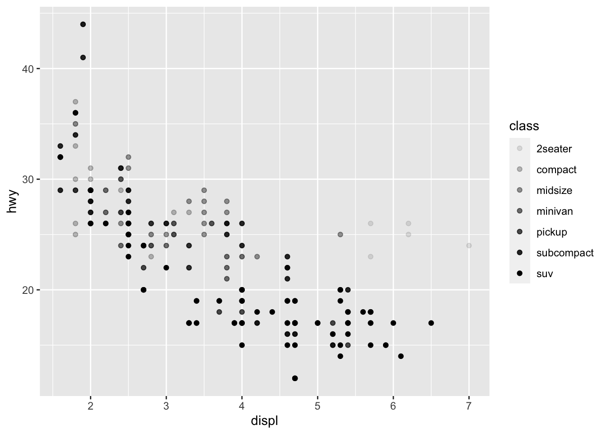
#Alpha controls transparency of points
ggplot(data = mpg) +
geom_point(mapping = aes(x = displ, y = hwy, shape = class))
#Shape controls the shape of points
ggplot(data = mpg) +
geom_point(mapping = aes(x = displ, y = hwy), color = "blue")
#Making all points in plot blue
ggplot(data = mpg) +
geom_point(mapping = aes(x = displ, y = hwy, color = "blue")) 
#First Problem Encountered: parenthesis issue that leaves color red
ggplot(data = mpg) +
geom_point(mapping = aes(x = displ, y = hwy)) 
#Second Problem Encountered: Should not be putting "+"
ggplot(data = mpg) +
geom_point(mapping = aes(x = displ, y = hwy)) +
facet_wrap(~ class, nrow = 2) 
#Faceting plot by a single variable
ggplot(data = mpg) +
geom_point(mapping = aes(x = displ, y = hwy)) +
facet_grid(drv ~ cyl)
#Faceting a plot on the combination of two variables
ggplot(data = mpg) +
geom_point(mapping = aes(x = drv, y = cyl)) #Makes empty cells within the plot
ggplot(data = mpg) +
geom_point(mapping = aes(x = displ, y = hwy)) +
facet_grid(drv ~ .) ggplot(data = mpg) +
geom_point(mapping = aes(x = displ, y = hwy)) +
facet_grid(. ~ cyl) #The "." creates a unary function
ggplot(data = mpg) +
geom_point(mapping = aes(x = displ, y = hwy)) +
facet_wrap(~ class, nrow = 2)
#This is the exact same single-variable faceted plot as before
ggplot(data = mpg) +
geom_point(mapping = aes(x = displ, y = hwy))
ggplot(data = mpg) +
geom_smooth(mapping = aes(x = displ, y = hwy))
#Can change the geom (geometrical object used to represent data) within a ggplot
ggplot(data = mpg) +
geom_smooth(mapping = aes(x = displ, y = hwy, linetype = drv)) 
#Setting the linetype of a line
ggplot(data = mpg) +
geom_smooth(mapping = aes(x = displ, y = hwy)) 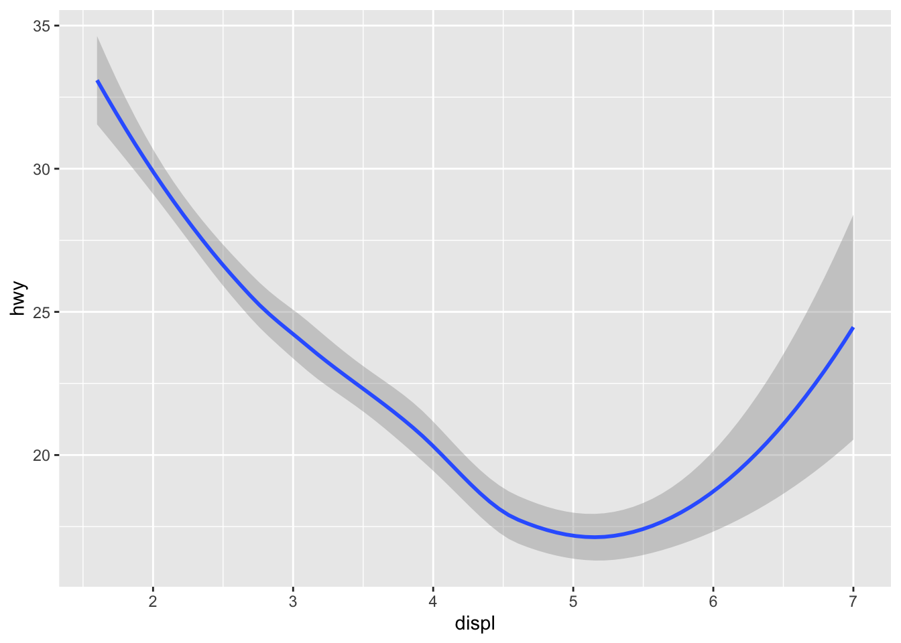
ggplot(data = mpg) +
geom_smooth(mapping = aes(x = displ, y = hwy, group = drv)) 
ggplot(data = mpg) +
geom_smooth(
mapping = aes(x = displ, y = hwy, color = drv),
show.legend = FALSE)
#Grouping data for geoms when you map an aesthetic to a discrete variable
ggplot(data = mpg) +
geom_point(mapping = aes(x = displ, y = hwy)) +
geom_smooth(mapping = aes(x = displ, y = hwy))
#Display multiple geoms in the same plot
ggplot(data = mpg, mapping = aes(x = displ, y = hwy)) +
geom_point() +
geom_smooth() 
#Passing a set of mappings to ggplot, treating them as global mappings that apply to each geom in the graph
ggplot(data = mpg, mapping = aes(x = displ, y = hwy)) +
geom_point(mapping = aes(color = class)) +
geom_smooth() 
#Displaying different aesthetics in different layers to extend/overwrite global mappings for that layer only
ggplot(data = mpg, mapping = aes(x = displ, y = hwy)) +
geom_point(mapping = aes(color = class)) +
geom_smooth(data = filter(mpg, class == "subcompact"), se = FALSE) 
#Local data argument in 'geom_smooth' overrudes that global data argument in ggplot for that layer only
ggplot(data = mpg, mapping = aes(x = displ, y = hwy, color = drv)) +
geom_point() +
geom_smooth(se = FALSE) #The data is not smoothed
ggplot(data = mpg, mapping = aes(x = displ, y = hwy)) +
geom_point() +
geom_smooth() 
ggplot() +
geom_point(data = mpg, mapping = aes(x = displ, y = hwy)) +
geom_smooth(data = mpg, mapping = aes(x = displ, y = hwy)) 
#They are the same graphs because the aethetics were input for all parts of the graph in both
ggplot(data = diamonds) +
geom_bar(mapping = aes(x = cut)) 
#ggplot of the dataset "diamonds"
ggplot(data = diamonds) +
stat_count(mapping = aes(x = cut)) 
#Recreating the last plot using "stat_count" instead
demo <- tribble(
~cut, ~freq,
"Fair", 1610,
"Good", 4906,
"Very Good", 12082,
"Premium", 13791,
"Ideal", 21551
)
#Bar chart where the height of the bar is already present in the data
ggplot(data = demo) +
geom_bar(mapping = aes(x = cut, y = freq), stat = "identity") 
#Previous bar chart where the height of the bar is generated by counting rows
ggplot(data = diamonds) +
geom_bar(mapping = aes(x = cut, y = stat(prop), group = 1))
#Display a bar chart of proportion rather than count
ggplot(data = diamonds) +
stat_summary(
mapping = aes(x = cut, y = depth),
fun.min = min,
fun.max = max,
fun = median
) 
#Summarizes the y values for each unique x value, drawing attention to the summary
ggplot(data = diamonds) +
geom_bar(mapping = aes(x = cut, y = after_stat(prop)))ggplot(data = diamonds) +
geom_bar(mapping = aes(x = cut, fill = color, y = after_stat(prop))) #A 'group = 1' must be added to make sure that the bar graphs are proportionate and accurately portray the data
ggplot(data = diamonds) +
geom_bar(mapping = aes(x = cut, color = cut))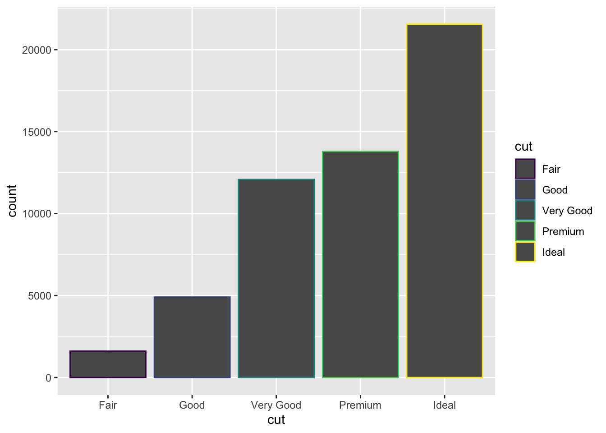
ggplot(data = diamonds) +
geom_bar(mapping = aes(x = cut, fill = cut))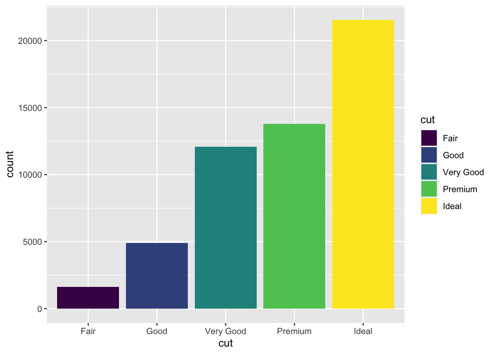
#Coloring a barchart using either "color" or "fill"
ggplot(data = diamonds) +
geom_bar(mapping = aes(x = cut, fill = clarity)) 
#Filling the aesthetic with another variable, 'clarity'
ggplot(data = diamonds, mapping = aes(x = cut, fill = clarity)) +
geom_bar(alpha = 1/5, position = "identity")
ggplot(data = diamonds, mapping = aes(x = cut, colour = clarity)) +
geom_bar(fill = NA, position = "identity") 
#To see the overlapping bars, need to make the bars slightly transparent by setting 'alpha' to a small value or completely transparent by setting 'fill=NA'
ggplot(data = diamonds) +
geom_bar(mapping = aes(x = cut, fill = clarity), position = "fill")
#Makes each set of stacked bars the same height
ggplot(data = diamonds) +
geom_bar(mapping = aes(x = cut, fill = clarity), position = "dodge") 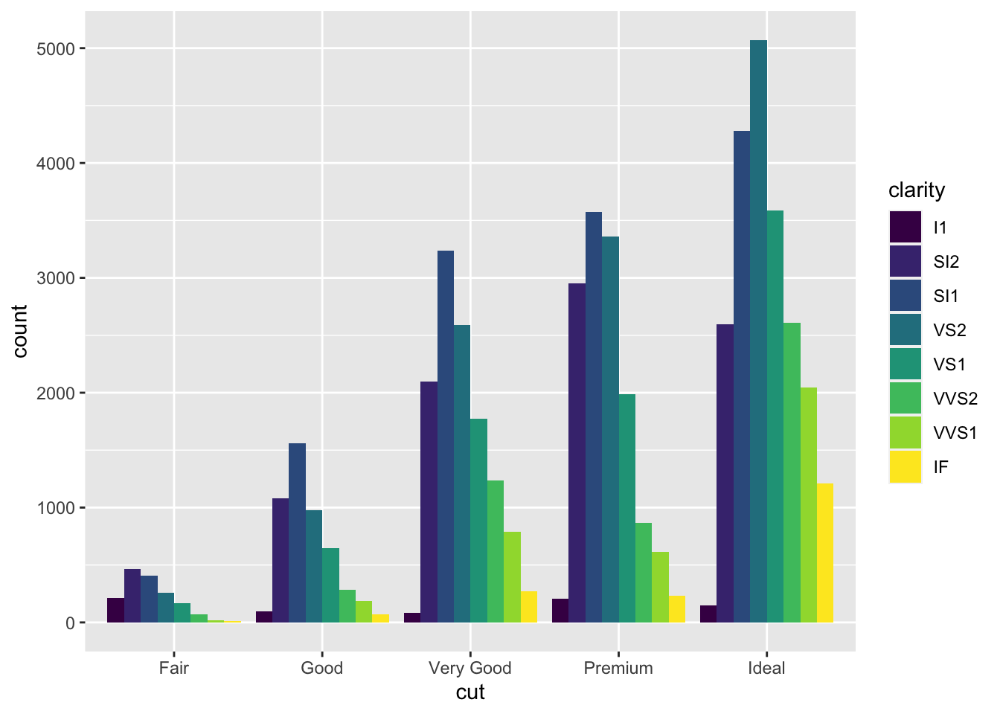
#Places overlapping objects directly beside one another
ggplot(data = mpg) +
geom_point(mapping = aes(x = displ, y = hwy), position = "jitter") #Avoiding gridding/overplotting by adding 'jitter,' adding random noise to the plot
ggplot(data = mpg, mapping = aes(x = cty, y = hwy)) +
geom_point() 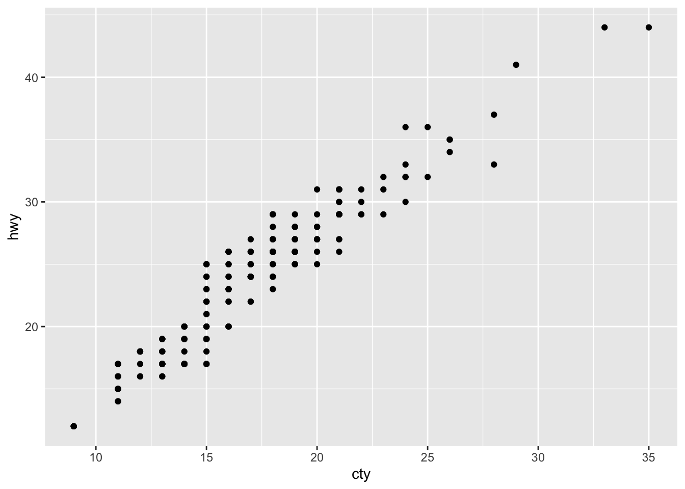
#Problem that may be fixed with jittering
ggplot(data = mpg, mapping = aes(x = class, y = hwy)) +
geom_boxplot()
ggplot(data = mpg, mapping = aes(x = class, y = hwy)) +
geom_boxplot() +
coord_flip() 
#Switching the x and y axes
nz <- map_data("nz")
ggplot(nz, aes(long, lat, group = group)) +
geom_polygon(fill = "white", colour = "black")
ggplot(nz, aes(long, lat, group = group)) +
geom_polygon(fill = "white", colour = "black") +
coord_quickmap()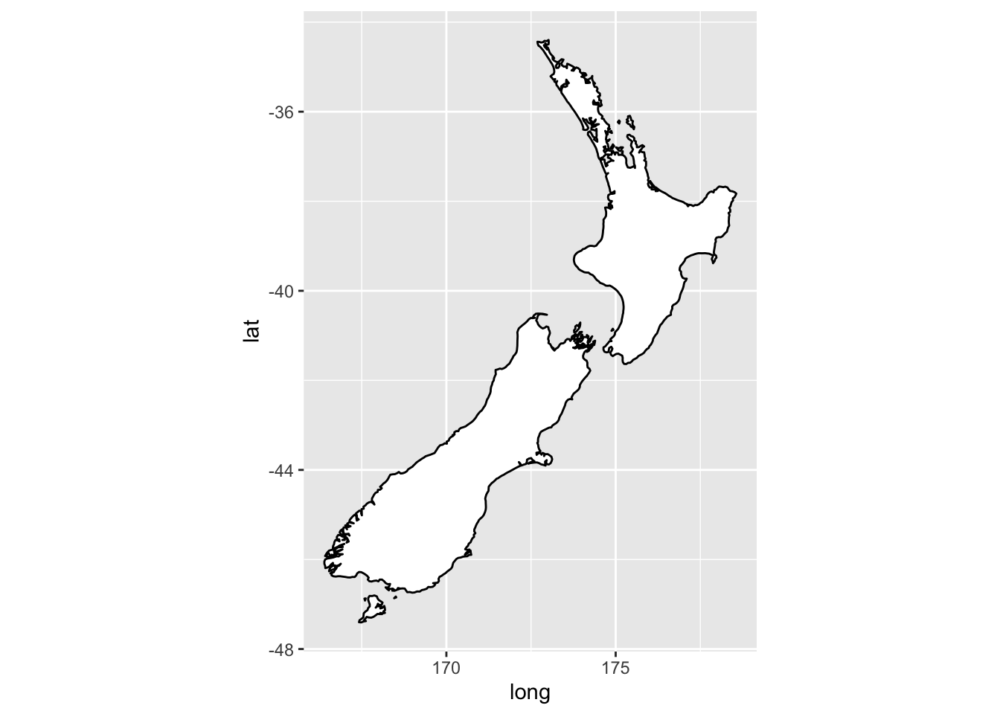
#Sets aspect ratio correctly for maps
bar <- ggplot(data = diamonds) +
geom_bar(
mapping = aes(x = cut, fill = cut),
show.legend = FALSE,
width = 1
) +
theme(aspect.ratio = 1) +
labs(x = NULL, y = NULL)
bar + coord_flip()
bar + coord_polar() 
#Uses polar coordinates
ggplot(data = mpg, mapping = aes(x = cty, y = hwy)) +
geom_point() +
geom_abline() +
coord_fixed() 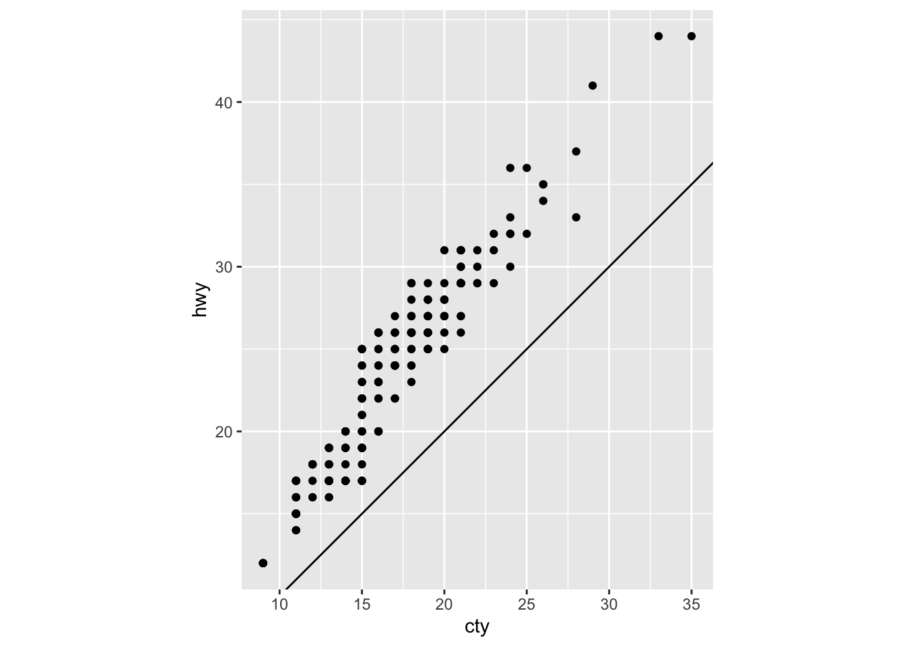
#Showing coordination between city and highway mpg using fixed polar coordinates and reference linesggplot(data = <DATA>) +
<GEOM_FUNCTION>(
mapping = aes(<MAPPINGS>),
stat = <STAT>,
position = <POSITION>
) +
<COORDINATE_FUNCTION> +
<FACET_FUNCTION>
#Nonworking graphic template for position adjustments, stats, coordinate systems, and facetingPage 2 - Chapter 28: Graphics for Communication
library(tidyverse)
# Scanning the library for the package 'tidyverse'
ggplot(mpg, aes(displ, hwy)) +
geom_point(aes(color = class)) +
geom_smooth(se = FALSE) +
labs(title = "Fuel efficiency generally decreases with engine size") 
# Adding labels with 'labs'
ggplot(mpg, aes(displ, hwy)) +
geom_point(aes(color = class)) +
geom_smooth(se = FALSE) +
labs(
title = "Fuel efficiency generally decreases with engine size",
subtitle = "Two seaters (sports cars) are an exception because of their light weight",
caption = "Data from fueleconomy.gov"
) 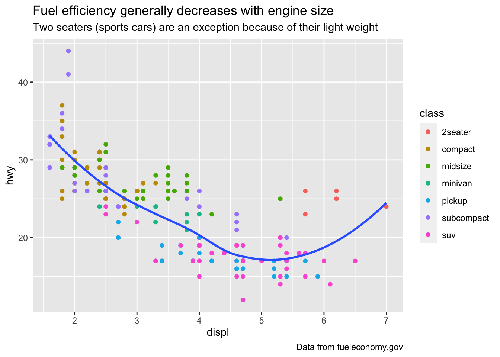
#Adding more text to a graph using 'subtitle' and 'caption'
ggplot(mpg, aes(displ, hwy)) +
geom_point(aes(colour = class)) +
geom_smooth(se = FALSE) +
labs(
x = "Engine displacement (L)",
y = "Highway fuel economy (mpg)",
colour = "Car type"
) 
#Using 'labs' to replace the axis and legend titles
df <- tibble(
x = runif(10),
y = runif(10)
)
ggplot(df, aes(x, y)) +
geom_point() +
labs(
x = quote(sum(x[i] ^ 2, i == 1, n)),
y = quote(alpha + beta + frac(delta, theta))
) #Using mathematical equations instead of text strings
best_in_class <- mpg %>%
group_by(class) %>%
filter(row_number(desc(hwy)) == 1)
ggplot(mpg, aes(displ, hwy)) +
geom_point(aes(colour = class)) +
geom_text(aes(label = model), data = best_in_class) 
#Using a tibble to provide labels, pulling out the most efficient 'car' in each class with 'dplyr' and then labeling it on the plot
ggplot(mpg, aes(displ, hwy)) +
geom_point(aes(colour = class)) +
geom_label(aes(label = model), data = best_in_class, nudge_y = 2, alpha = 0.5) 
#'geom_label' draws a rectangle behind the text and 'nudge_y' parameter moves the labels above the corresponding points
ggplot(mpg, aes(displ, hwy)) +
geom_point(aes(colour = class)) +
geom_point(size = 3, shape = 1, data = best_in_class) +
ggrepel::geom_label_repel(aes(label = model), data = best_in_class) #The 'ggrepel' pack automatically adjusts labels so they don't overlap
class_avg <- mpg %>%
group_by(class) %>%
summarise(
displ = median(displ),
hwy = median(hwy)
)
#> `summarise()` ungrouping output (override with `.groups` argument)
ggplot(mpg, aes(displ, hwy, colour = class)) +
ggrepel::geom_label_repel(aes(label = class),
data = class_avg,
size = 6,
label.size = 0,
segment.color = NA
) +
geom_point() +
theme(legend.position = "none") #Replacing the legends with labels placed directly in the plot, also turning the legend off
label <- mpg %>%
summarise(
displ = max(displ),
hwy = max(hwy),
label = "Increasing engine size is \nrelated to decreasing fuel economy."
)
ggplot(mpg, aes(displ, hwy)) +
geom_point() +
geom_text(aes(label = label), data = label, vjust = "top", hjust = "right") 
#Creating a new data frame to compute the maximum values of x and y
label <- tibble(
displ = Inf,
hwy = Inf,
label = "Increasing engine size is \nrelated to decreasing fuel economy."
)
ggplot(mpg, aes(displ, hwy)) +
geom_point() +
geom_text(aes(label = label), data = label, vjust = "top", hjust = "right") 
#Using 'Inf' to place text on the borders of the plot, while using 'tibble' to create the data frame
"Increasing engine size is related to decreasing fuel economy." %>%
stringr::str_wrap(width = 40) %>%
writeLines() ## Increasing engine size is related to
## decreasing fuel economy. # Increasing engine size is related to decreasing fuel economy.
#Automatically adding line breaks with the 'stringr' line
ggplot(mpg, aes(displ, hwy)) +
geom_point(aes(colour = class))
#Part one of two, the input to create the following output:
ggplot(mpg, aes(displ, hwy)) +
geom_point(aes(colour = class)) +
scale_x_continuous() +
scale_y_continuous() +
scale_colour_discrete() 
#Part two of two, the output where ggplot2 automatically adds default scales
ggplot(mpg, aes(displ, hwy)) +
geom_point() +
scale_y_continuous(breaks = seq(15, 40, by = 5)) 
#Using 'breaks' to override the default choice of appearance of the ticks on the axes and keys on the legend
ggplot(mpg, aes(displ, hwy)) +
geom_point() +
scale_x_continuous(labels = NULL) +
scale_y_continuous(labels = NULL)
#Adding 'NULL' to suppress the labels altogether
presidential %>%
mutate(id = 33 + row_number()) %>%
ggplot(aes(start, id)) +
geom_point() +
geom_segment(aes(xend = end, yend = id)) +
scale_x_date(NULL, breaks = presidential$start, date_labels = "'%y") 
#Using a presidential terms dataset, using 'breaks' while working with few data points to highlight exactly where the observations occurbase <- ggplot(mpg, aes(displ, hwy)) +
geom_point(aes(colour = class)) +
base + theme(legend.position = "left") +
base + theme(legend.position = "top") +
base + theme(legend.position = "bottom") +
base + theme(legend.position = "right") # the default
#Using themes to control the non-data parts of the plot, where the theme setting 'legend.position' controls where the legend is drawnggplot(mpg, aes(displ, hwy)) +
geom_point(aes(colour = class)) +
geom_smooth(se = FALSE) +
theme(legend.position = "bottom") +
guides(colour = guide_legend(nrow = 1, override.aes = list(size = 4)))
# `geom_smooth()` using method = 'loess' and formula 'y ~ x'
#Using 'guides' to control the display of individual legends, controlling the number of rows the legend uses with 'nrow,' and overriding one of the aesthetics to make the points bigger
ggplot(diamonds, aes(carat, price)) +
geom_bin2d()
ggplot(diamonds, aes(log10(carat), log10(price))) +
geom_bin2d() 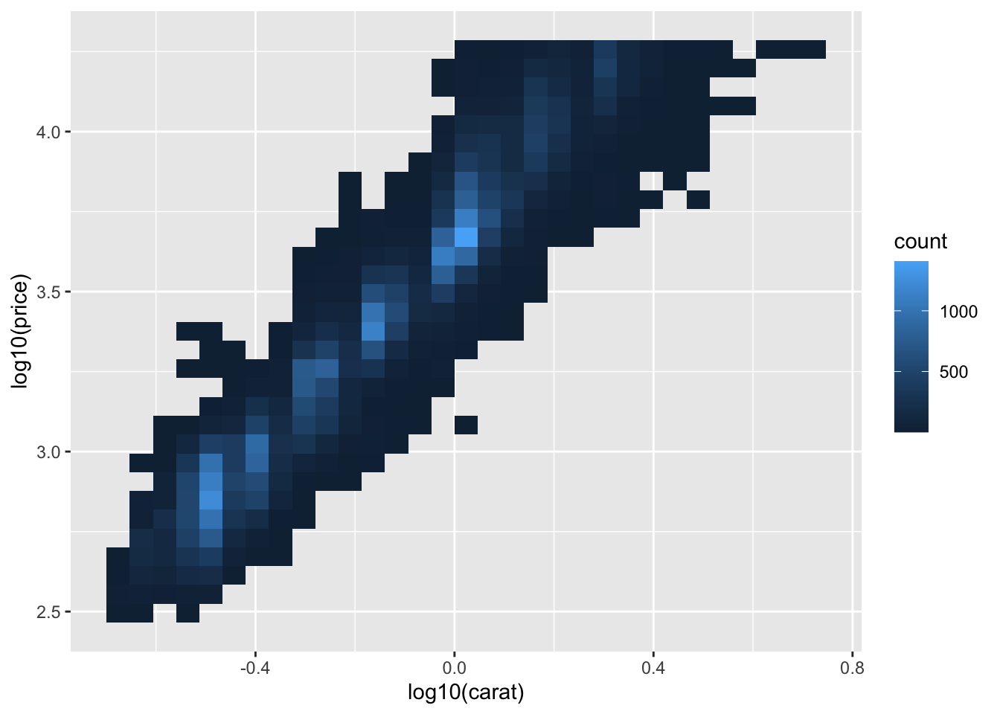
#Plotting transformations of the variable to see a more precise relationship
ggplot(diamonds, aes(carat, price)) +
geom_bin2d() +
scale_x_log10() +
scale_y_log10() 
#Identical to the last plot except the axes are labelled on the original data scale
ggplot(mpg, aes(displ, hwy)) +
geom_point(aes(color = drv))
ggplot(mpg, aes(displ, hwy)) +
geom_point(aes(color = drv)) +
scale_colour_brewer(palette = "Set1") 
#Altering graphs to create a color palette that may be distinguished even for those who are color-blind
ggplot(mpg, aes(displ, hwy)) +
geom_point(aes(color = drv, shape = drv)) +
scale_colour_brewer(palette = "Set1") 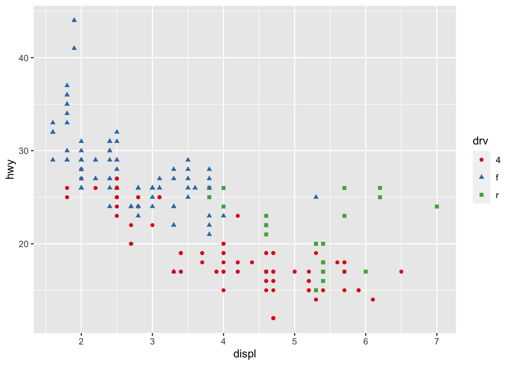
#Simpler re-coloring techniques so that colored graphs can even be see in black-and-white
presidential %>%
mutate(id = 33 + row_number()) %>%
ggplot(aes(start, id, colour = party)) +
geom_point() +
geom_segment(aes(xend = end, yend = id)) +
scale_colour_manual(values = c(Republican = "red", Democratic = "blue")) 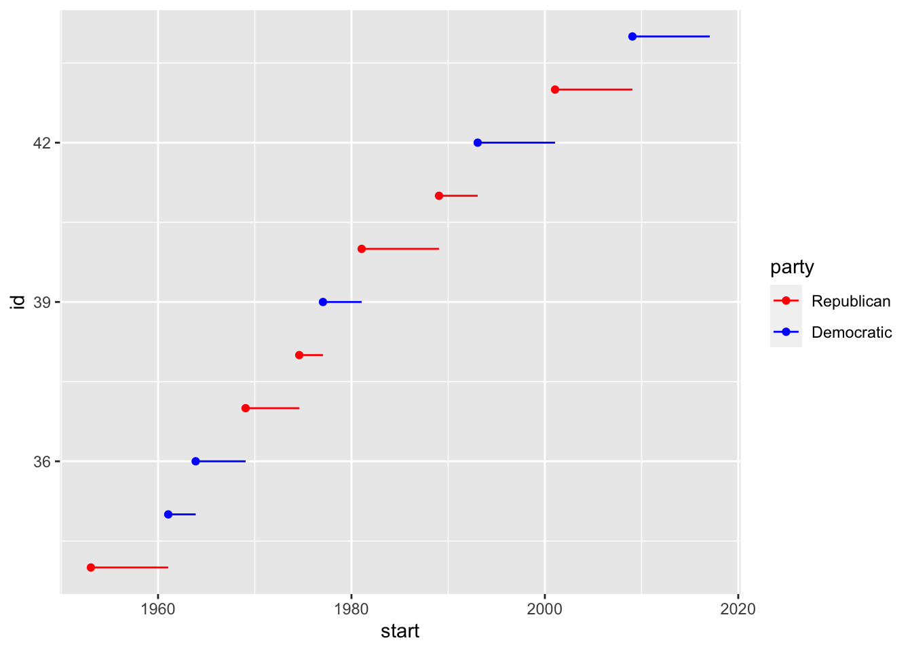
#Using 'scale_colour_manual' when you have a predefined mapping between values and colors
df <- tibble(
x = rnorm(10000),
y = rnorm(10000)
)
ggplot(df, aes(x, y)) +
geom_hex() +
coord_fixed()
ggplot(df, aes(x, y)) +
geom_hex() +
viridis::scale_fill_viridis() +
coord_fixed() #Using the 'viridis' package within 'scale_colour_viridis' for a continuous analog of the categorical ColorBrewer scales
ggplot(df, aes(x, y)) +
geom_hex() +
scale_colour_gradient(low = "white", high = "red") +
coord_fixed() #Code does not override the default scale
ggplot(diamonds, aes(carat, price)) +
geom_point(aes(colour = cut), alpha = 1/20) #Difficulty on seeing the legend, must use 'override.aes' to make clearer
ggplot(mpg, mapping = aes(displ, hwy)) +
geom_point(aes(color = class)) +
geom_smooth() +
coord_cartesian(xlim = c(5, 7), ylim = c(10, 30))
mpg %>%
filter(displ >= 5, displ <= 7, hwy >= 10, hwy <= 30) %>%
ggplot(aes(displ, hwy)) +
geom_point(aes(color = class)) +
geom_smooth() 
#Using 'coord_cartesian' to zoom in on a region of the plot
suv <- mpg %>% filter(class == "suv")
compact <- mpg %>% filter(class == "compact")
ggplot(suv, aes(displ, hwy, colour = drv)) geom_point()## geom_point: na.rm = FALSE
## stat_identity: na.rm = FALSE
## position_identityggplot(compact, aes(displ, hwy, colour = drv))
geom_point() ## geom_point: na.rm = FALSE
## stat_identity: na.rm = FALSE
## position_identity #Expanding the limits of the plots to match scales across the two plots
x_scale <- scale_x_continuous(limits = range(mpg$displ))
y_scale <- scale_y_continuous(limits = range(mpg$hwy))
col_scale <- scale_colour_discrete(limits = unique(mpg$drv))
ggplot(suv, aes(displ, hwy, colour = drv))
geom_point()## geom_point: na.rm = FALSE
## stat_identity: na.rm = FALSE
## position_identity x_scale## <ScaleContinuousPosition>
## Range:
## Limits: 1.6 -- 7 y_scale## <ScaleContinuousPosition>
## Range:
## Limits: 12 -- 44 col_scale## <ggproto object: Class ScaleDiscrete, Scale, gg>
## aesthetics: colour
## axis_order: function
## break_info: function
## break_positions: function
## breaks: waiver
## call: call
## clone: function
## dimension: function
## drop: TRUE
## expand: waiver
## get_breaks: function
## get_breaks_minor: function
## get_labels: function
## get_limits: function
## guide: legend
## is_discrete: function
## is_empty: function
## labels: waiver
## limits: f 4 r
## make_sec_title: function
## make_title: function
## map: function
## map_df: function
## n.breaks.cache: NULL
## na.translate: TRUE
## na.value: grey50
## name: waiver
## palette: function
## palette.cache: NULL
## position: left
## range: <ggproto object: Class RangeDiscrete, Range, gg>
## range: NULL
## reset: function
## train: function
## super: <ggproto object: Class RangeDiscrete, Range, gg>
## rescale: function
## reset: function
## scale_name: hue
## train: function
## train_df: function
## transform: function
## transform_df: function
## super: <ggproto object: Class ScaleDiscrete, Scale, gg>ggplot(compact, aes(displ, hwy, colour = drv)) geom_point()## geom_point: na.rm = FALSE
## stat_identity: na.rm = FALSE
## position_identity x_scale## <ScaleContinuousPosition>
## Range:
## Limits: 1.6 -- 7 y_scale## <ScaleContinuousPosition>
## Range:
## Limits: 12 -- 44 col_scale## <ggproto object: Class ScaleDiscrete, Scale, gg>
## aesthetics: colour
## axis_order: function
## break_info: function
## break_positions: function
## breaks: waiver
## call: call
## clone: function
## dimension: function
## drop: TRUE
## expand: waiver
## get_breaks: function
## get_breaks_minor: function
## get_labels: function
## get_limits: function
## guide: legend
## is_discrete: function
## is_empty: function
## labels: waiver
## limits: f 4 r
## make_sec_title: function
## make_title: function
## map: function
## map_df: function
## n.breaks.cache: NULL
## na.translate: TRUE
## na.value: grey50
## name: waiver
## palette: function
## palette.cache: NULL
## position: left
## range: <ggproto object: Class RangeDiscrete, Range, gg>
## range: NULL
## reset: function
## train: function
## super: <ggproto object: Class RangeDiscrete, Range, gg>
## rescale: function
## reset: function
## scale_name: hue
## train: function
## train_df: function
## transform: function
## transform_df: function
## super: <ggproto object: Class ScaleDiscrete, Scale, gg> #Sharing scales across multiple plots to train the scales with the limits of the full data
ggplot(mpg, aes(displ, hwy)) geom_point(aes(color = class))## mapping: colour = ~class
## geom_point: na.rm = FALSE
## stat_identity: na.rm = FALSE
## position_identity geom_smooth(se = FALSE)## geom_smooth: na.rm = FALSE, orientation = NA, se = FALSE
## stat_smooth: na.rm = FALSE, orientation = NA, se = FALSE
## position_identity theme_bw()## List of 93
## $ line :List of 6
## ..$ colour : chr "black"
## ..$ size : num 0.5
## ..$ linetype : num 1
## ..$ lineend : chr "butt"
## ..$ arrow : logi FALSE
## ..$ inherit.blank: logi TRUE
## ..- attr(*, "class")= chr [1:2] "element_line" "element"
## $ rect :List of 5
## ..$ fill : chr "white"
## ..$ colour : chr "black"
## ..$ size : num 0.5
## ..$ linetype : num 1
## ..$ inherit.blank: logi TRUE
## ..- attr(*, "class")= chr [1:2] "element_rect" "element"
## $ text :List of 11
## ..$ family : chr ""
## ..$ face : chr "plain"
## ..$ colour : chr "black"
## ..$ size : num 11
## ..$ hjust : num 0.5
## ..$ vjust : num 0.5
## ..$ angle : num 0
## ..$ lineheight : num 0.9
## ..$ margin : 'margin' num [1:4] 0points 0points 0points 0points
## .. ..- attr(*, "unit")= int 8
## ..$ debug : logi FALSE
## ..$ inherit.blank: logi TRUE
## ..- attr(*, "class")= chr [1:2] "element_text" "element"
## $ title : NULL
## $ aspect.ratio : NULL
## $ axis.title : NULL
## $ axis.title.x :List of 11
## ..$ family : NULL
## ..$ face : NULL
## ..$ colour : NULL
## ..$ size : NULL
## ..$ hjust : NULL
## ..$ vjust : num 1
## ..$ angle : NULL
## ..$ lineheight : NULL
## ..$ margin : 'margin' num [1:4] 2.75points 0points 0points 0points
## .. ..- attr(*, "unit")= int 8
## ..$ debug : NULL
## ..$ inherit.blank: logi TRUE
## ..- attr(*, "class")= chr [1:2] "element_text" "element"
## $ axis.title.x.top :List of 11
## ..$ family : NULL
## ..$ face : NULL
## ..$ colour : NULL
## ..$ size : NULL
## ..$ hjust : NULL
## ..$ vjust : num 0
## ..$ angle : NULL
## ..$ lineheight : NULL
## ..$ margin : 'margin' num [1:4] 0points 0points 2.75points 0points
## .. ..- attr(*, "unit")= int 8
## ..$ debug : NULL
## ..$ inherit.blank: logi TRUE
## ..- attr(*, "class")= chr [1:2] "element_text" "element"
## $ axis.title.x.bottom : NULL
## $ axis.title.y :List of 11
## ..$ family : NULL
## ..$ face : NULL
## ..$ colour : NULL
## ..$ size : NULL
## ..$ hjust : NULL
## ..$ vjust : num 1
## ..$ angle : num 90
## ..$ lineheight : NULL
## ..$ margin : 'margin' num [1:4] 0points 2.75points 0points 0points
## .. ..- attr(*, "unit")= int 8
## ..$ debug : NULL
## ..$ inherit.blank: logi TRUE
## ..- attr(*, "class")= chr [1:2] "element_text" "element"
## $ axis.title.y.left : NULL
## $ axis.title.y.right :List of 11
## ..$ family : NULL
## ..$ face : NULL
## ..$ colour : NULL
## ..$ size : NULL
## ..$ hjust : NULL
## ..$ vjust : num 0
## ..$ angle : num -90
## ..$ lineheight : NULL
## ..$ margin : 'margin' num [1:4] 0points 0points 0points 2.75points
## .. ..- attr(*, "unit")= int 8
## ..$ debug : NULL
## ..$ inherit.blank: logi TRUE
## ..- attr(*, "class")= chr [1:2] "element_text" "element"
## $ axis.text :List of 11
## ..$ family : NULL
## ..$ face : NULL
## ..$ colour : chr "grey30"
## ..$ size : 'rel' num 0.8
## ..$ hjust : NULL
## ..$ vjust : NULL
## ..$ angle : NULL
## ..$ lineheight : NULL
## ..$ margin : NULL
## ..$ debug : NULL
## ..$ inherit.blank: logi TRUE
## ..- attr(*, "class")= chr [1:2] "element_text" "element"
## $ axis.text.x :List of 11
## ..$ family : NULL
## ..$ face : NULL
## ..$ colour : NULL
## ..$ size : NULL
## ..$ hjust : NULL
## ..$ vjust : num 1
## ..$ angle : NULL
## ..$ lineheight : NULL
## ..$ margin : 'margin' num [1:4] 2.2points 0points 0points 0points
## .. ..- attr(*, "unit")= int 8
## ..$ debug : NULL
## ..$ inherit.blank: logi TRUE
## ..- attr(*, "class")= chr [1:2] "element_text" "element"
## $ axis.text.x.top :List of 11
## ..$ family : NULL
## ..$ face : NULL
## ..$ colour : NULL
## ..$ size : NULL
## ..$ hjust : NULL
## ..$ vjust : num 0
## ..$ angle : NULL
## ..$ lineheight : NULL
## ..$ margin : 'margin' num [1:4] 0points 0points 2.2points 0points
## .. ..- attr(*, "unit")= int 8
## ..$ debug : NULL
## ..$ inherit.blank: logi TRUE
## ..- attr(*, "class")= chr [1:2] "element_text" "element"
## $ axis.text.x.bottom : NULL
## $ axis.text.y :List of 11
## ..$ family : NULL
## ..$ face : NULL
## ..$ colour : NULL
## ..$ size : NULL
## ..$ hjust : num 1
## ..$ vjust : NULL
## ..$ angle : NULL
## ..$ lineheight : NULL
## ..$ margin : 'margin' num [1:4] 0points 2.2points 0points 0points
## .. ..- attr(*, "unit")= int 8
## ..$ debug : NULL
## ..$ inherit.blank: logi TRUE
## ..- attr(*, "class")= chr [1:2] "element_text" "element"
## $ axis.text.y.left : NULL
## $ axis.text.y.right :List of 11
## ..$ family : NULL
## ..$ face : NULL
## ..$ colour : NULL
## ..$ size : NULL
## ..$ hjust : num 0
## ..$ vjust : NULL
## ..$ angle : NULL
## ..$ lineheight : NULL
## ..$ margin : 'margin' num [1:4] 0points 0points 0points 2.2points
## .. ..- attr(*, "unit")= int 8
## ..$ debug : NULL
## ..$ inherit.blank: logi TRUE
## ..- attr(*, "class")= chr [1:2] "element_text" "element"
## $ axis.ticks :List of 6
## ..$ colour : chr "grey20"
## ..$ size : NULL
## ..$ linetype : NULL
## ..$ lineend : NULL
## ..$ arrow : logi FALSE
## ..$ inherit.blank: logi TRUE
## ..- attr(*, "class")= chr [1:2] "element_line" "element"
## $ axis.ticks.x : NULL
## $ axis.ticks.x.top : NULL
## $ axis.ticks.x.bottom : NULL
## $ axis.ticks.y : NULL
## $ axis.ticks.y.left : NULL
## $ axis.ticks.y.right : NULL
## $ axis.ticks.length : 'simpleUnit' num 2.75points
## ..- attr(*, "unit")= int 8
## $ axis.ticks.length.x : NULL
## $ axis.ticks.length.x.top : NULL
## $ axis.ticks.length.x.bottom: NULL
## $ axis.ticks.length.y : NULL
## $ axis.ticks.length.y.left : NULL
## $ axis.ticks.length.y.right : NULL
## $ axis.line : list()
## ..- attr(*, "class")= chr [1:2] "element_blank" "element"
## $ axis.line.x : NULL
## $ axis.line.x.top : NULL
## $ axis.line.x.bottom : NULL
## $ axis.line.y : NULL
## $ axis.line.y.left : NULL
## $ axis.line.y.right : NULL
## $ legend.background :List of 5
## ..$ fill : NULL
## ..$ colour : logi NA
## ..$ size : NULL
## ..$ linetype : NULL
## ..$ inherit.blank: logi TRUE
## ..- attr(*, "class")= chr [1:2] "element_rect" "element"
## $ legend.margin : 'margin' num [1:4] 5.5points 5.5points 5.5points 5.5points
## ..- attr(*, "unit")= int 8
## $ legend.spacing : 'simpleUnit' num 11points
## ..- attr(*, "unit")= int 8
## $ legend.spacing.x : NULL
## $ legend.spacing.y : NULL
## $ legend.key :List of 5
## ..$ fill : chr "white"
## ..$ colour : logi NA
## ..$ size : NULL
## ..$ linetype : NULL
## ..$ inherit.blank: logi TRUE
## ..- attr(*, "class")= chr [1:2] "element_rect" "element"
## $ legend.key.size : 'simpleUnit' num 1.2lines
## ..- attr(*, "unit")= int 3
## $ legend.key.height : NULL
## $ legend.key.width : NULL
## $ legend.text :List of 11
## ..$ family : NULL
## ..$ face : NULL
## ..$ colour : NULL
## ..$ size : 'rel' num 0.8
## ..$ hjust : NULL
## ..$ vjust : NULL
## ..$ angle : NULL
## ..$ lineheight : NULL
## ..$ margin : NULL
## ..$ debug : NULL
## ..$ inherit.blank: logi TRUE
## ..- attr(*, "class")= chr [1:2] "element_text" "element"
## $ legend.text.align : NULL
## $ legend.title :List of 11
## ..$ family : NULL
## ..$ face : NULL
## ..$ colour : NULL
## ..$ size : NULL
## ..$ hjust : num 0
## ..$ vjust : NULL
## ..$ angle : NULL
## ..$ lineheight : NULL
## ..$ margin : NULL
## ..$ debug : NULL
## ..$ inherit.blank: logi TRUE
## ..- attr(*, "class")= chr [1:2] "element_text" "element"
## $ legend.title.align : NULL
## $ legend.position : chr "right"
## $ legend.direction : NULL
## $ legend.justification : chr "center"
## $ legend.box : NULL
## $ legend.box.just : NULL
## $ legend.box.margin : 'margin' num [1:4] 0cm 0cm 0cm 0cm
## ..- attr(*, "unit")= int 1
## $ legend.box.background : list()
## ..- attr(*, "class")= chr [1:2] "element_blank" "element"
## $ legend.box.spacing : 'simpleUnit' num 11points
## ..- attr(*, "unit")= int 8
## $ panel.background :List of 5
## ..$ fill : chr "white"
## ..$ colour : logi NA
## ..$ size : NULL
## ..$ linetype : NULL
## ..$ inherit.blank: logi TRUE
## ..- attr(*, "class")= chr [1:2] "element_rect" "element"
## $ panel.border :List of 5
## ..$ fill : logi NA
## ..$ colour : chr "grey20"
## ..$ size : NULL
## ..$ linetype : NULL
## ..$ inherit.blank: logi TRUE
## ..- attr(*, "class")= chr [1:2] "element_rect" "element"
## $ panel.spacing : 'simpleUnit' num 5.5points
## ..- attr(*, "unit")= int 8
## $ panel.spacing.x : NULL
## $ panel.spacing.y : NULL
## $ panel.grid :List of 6
## ..$ colour : chr "grey92"
## ..$ size : NULL
## ..$ linetype : NULL
## ..$ lineend : NULL
## ..$ arrow : logi FALSE
## ..$ inherit.blank: logi TRUE
## ..- attr(*, "class")= chr [1:2] "element_line" "element"
## $ panel.grid.major : NULL
## $ panel.grid.minor :List of 6
## ..$ colour : NULL
## ..$ size : 'rel' num 0.5
## ..$ linetype : NULL
## ..$ lineend : NULL
## ..$ arrow : logi FALSE
## ..$ inherit.blank: logi TRUE
## ..- attr(*, "class")= chr [1:2] "element_line" "element"
## $ panel.grid.major.x : NULL
## $ panel.grid.major.y : NULL
## $ panel.grid.minor.x : NULL
## $ panel.grid.minor.y : NULL
## $ panel.ontop : logi FALSE
## $ plot.background :List of 5
## ..$ fill : NULL
## ..$ colour : chr "white"
## ..$ size : NULL
## ..$ linetype : NULL
## ..$ inherit.blank: logi TRUE
## ..- attr(*, "class")= chr [1:2] "element_rect" "element"
## $ plot.title :List of 11
## ..$ family : NULL
## ..$ face : NULL
## ..$ colour : NULL
## ..$ size : 'rel' num 1.2
## ..$ hjust : num 0
## ..$ vjust : num 1
## ..$ angle : NULL
## ..$ lineheight : NULL
## ..$ margin : 'margin' num [1:4] 0points 0points 5.5points 0points
## .. ..- attr(*, "unit")= int 8
## ..$ debug : NULL
## ..$ inherit.blank: logi TRUE
## ..- attr(*, "class")= chr [1:2] "element_text" "element"
## $ plot.title.position : chr "panel"
## $ plot.subtitle :List of 11
## ..$ family : NULL
## ..$ face : NULL
## ..$ colour : NULL
## ..$ size : NULL
## ..$ hjust : num 0
## ..$ vjust : num 1
## ..$ angle : NULL
## ..$ lineheight : NULL
## ..$ margin : 'margin' num [1:4] 0points 0points 5.5points 0points
## .. ..- attr(*, "unit")= int 8
## ..$ debug : NULL
## ..$ inherit.blank: logi TRUE
## ..- attr(*, "class")= chr [1:2] "element_text" "element"
## $ plot.caption :List of 11
## ..$ family : NULL
## ..$ face : NULL
## ..$ colour : NULL
## ..$ size : 'rel' num 0.8
## ..$ hjust : num 1
## ..$ vjust : num 1
## ..$ angle : NULL
## ..$ lineheight : NULL
## ..$ margin : 'margin' num [1:4] 5.5points 0points 0points 0points
## .. ..- attr(*, "unit")= int 8
## ..$ debug : NULL
## ..$ inherit.blank: logi TRUE
## ..- attr(*, "class")= chr [1:2] "element_text" "element"
## $ plot.caption.position : chr "panel"
## $ plot.tag :List of 11
## ..$ family : NULL
## ..$ face : NULL
## ..$ colour : NULL
## ..$ size : 'rel' num 1.2
## ..$ hjust : num 0.5
## ..$ vjust : num 0.5
## ..$ angle : NULL
## ..$ lineheight : NULL
## ..$ margin : NULL
## ..$ debug : NULL
## ..$ inherit.blank: logi TRUE
## ..- attr(*, "class")= chr [1:2] "element_text" "element"
## $ plot.tag.position : chr "topleft"
## $ plot.margin : 'margin' num [1:4] 5.5points 5.5points 5.5points 5.5points
## ..- attr(*, "unit")= int 8
## $ strip.background :List of 5
## ..$ fill : chr "grey85"
## ..$ colour : chr "grey20"
## ..$ size : NULL
## ..$ linetype : NULL
## ..$ inherit.blank: logi TRUE
## ..- attr(*, "class")= chr [1:2] "element_rect" "element"
## $ strip.background.x : NULL
## $ strip.background.y : NULL
## $ strip.placement : chr "inside"
## $ strip.text :List of 11
## ..$ family : NULL
## ..$ face : NULL
## ..$ colour : chr "grey10"
## ..$ size : 'rel' num 0.8
## ..$ hjust : NULL
## ..$ vjust : NULL
## ..$ angle : NULL
## ..$ lineheight : NULL
## ..$ margin : 'margin' num [1:4] 4.4points 4.4points 4.4points 4.4points
## .. ..- attr(*, "unit")= int 8
## ..$ debug : NULL
## ..$ inherit.blank: logi TRUE
## ..- attr(*, "class")= chr [1:2] "element_text" "element"
## $ strip.text.x : NULL
## $ strip.text.y :List of 11
## ..$ family : NULL
## ..$ face : NULL
## ..$ colour : NULL
## ..$ size : NULL
## ..$ hjust : NULL
## ..$ vjust : NULL
## ..$ angle : num -90
## ..$ lineheight : NULL
## ..$ margin : NULL
## ..$ debug : NULL
## ..$ inherit.blank: logi TRUE
## ..- attr(*, "class")= chr [1:2] "element_text" "element"
## $ strip.switch.pad.grid : 'simpleUnit' num 2.75points
## ..- attr(*, "unit")= int 8
## $ strip.switch.pad.wrap : 'simpleUnit' num 2.75points
## ..- attr(*, "unit")= int 8
## $ strip.text.y.left :List of 11
## ..$ family : NULL
## ..$ face : NULL
## ..$ colour : NULL
## ..$ size : NULL
## ..$ hjust : NULL
## ..$ vjust : NULL
## ..$ angle : num 90
## ..$ lineheight : NULL
## ..$ margin : NULL
## ..$ debug : NULL
## ..$ inherit.blank: logi TRUE
## ..- attr(*, "class")= chr [1:2] "element_text" "element"
## - attr(*, "class")= chr [1:2] "theme" "gg"
## - attr(*, "complete")= logi TRUE
## - attr(*, "validate")= logi TRUE #Can customize the non-data elements of the plot with a themeggplot(mpg, aes(displ, hwy)) geom_point()
#Sample code to save the plots out of R in either 'ggsave' or knitrggsave("my-plot.pdf")
# Saving 7 x 4.33 in image
#Using 'ggsave' to save the image of the plots as a pdfFinal Project
Eliza Epstein, Hanzhao Kuang, Carolina Herrera Figueroa, Carmen Harrison Montoya December 5, 2021
Homicide Research
The following paper explores the process of analyzing homicide data within the US. Initially, the research question was “Is there a correlation between the perpetrator’s gender and whether the homicide was considered justifiable within the last five years.” Before delving into the motivation behind this question, it is important to note that while the project started here, it took a detour. There were many issues with the data set used, so eventually it was determined that with the time and resources at hand, we would not be able to answer this question. That said, the overarching theme of homicide research was maintained. However, we deviated from the relationship between gender and justifiable homicides to weapons used by states. We landed on the question “Are there differences in Weapon Type Used in homicides in Northern vs Southern States?” While on the surface these topics seem unrelated, they fall under the same general motivating theme of flaws within the homicide rates in the US.
The motivation to analyze the initial relationship between gender and justifiable homicides came from the fact that many research studies have shown that males are more impulsive than females, and commit more homicides overall. Thus, our hypothesis was that for citizens, justifiable homicides would be committed more by women. For police officers, on the other hand, males would be committing more justifiable homicides - considering that the majority of police officers are male.
The initial research design was to test if there were differences in gender for justifiable and non-justifiable murders. That said, when conducting the analysis, it became clear that given the time and resources available, it would not be a feasible study. The data file was extremely large, with many empty cells. Without the skillset to “clean” the data file in R, the plots were impossible to analyze.
The initial data set used had many empty cells. Even though it was attempted to exclude these, as learned in class, it ultimately would not allow us to make the desired bar plot excluding the leftmost bar which skewed the size of the rest. While the seven other bars on the stacked bar plot do have useful information, it was decided that it would not be possible to clean the dataset in the time available. Additionally, with the empty cells throughout the entire data set, the t-tests run were not useful.
That said, after extensive efforts to make the question work, it was ultimately decided that we should work with a new data set. In exploring themes under the same overarching idea of imbalances in homicide rates, we elected to focus on weapons used by state. While it is known that citizens in the south are more likely to own firearms, the question we wanted to study was whether there was a significant difference in weapon type used in homicides in Northern vs Southern states.
The motivation for this data analysis stemmed from the ongoing issues regarding gun homicides in the US. While access to guns is a federal issue, each state has their own laws regarding firearms. In 2019 there were a total of 39, 707 total deaths from firearms in the US. Further, in 2018 firearms were responsible for about 75% of homicides in the US. It has been estimated that about 31% of households in the US possess firearms and about 22% of adults own at least one firearm. The hypothesis for our study was that southern states will have significantly higher rates of firearms used in homicides. The null hypothesis is therefore that there will be no difference between northern and southern states in levels of firearms used in homicides.
The dataset used to analyze this question is part of the FBI’s Uniform Crime Report of 2019, for which law enforcement agencies throughout the United States provide summary reports on Part I offenses (which include criminal homicide, arson and assault) . This is voluntary and counties are not obligated to send any reports to the FBI. This survey covers 93% of the population, and only reports on crimes that are known to the police. The team specifically focused on Table 20 of the report, which looks at murder by state and types of weapons. It is important to note that Alabama and Florida are excluded from our analysis because the data for these was extremely limited.
We decided to create maps based on the weapons used in homicides for each state. These maps simply show the number of a certain type of weapon used in every state. For example, the map below shows the number of handgunds that were used in homicides in each state. On the map, California is depicted with the lightest shade of blue, indicating a very high number of handguns used in homicides relative to other states.

The map below shows the number of rifles used in homicides in each state.
This map (below) instead shows the number of shotguns used in homicides. For this specific type of weapon we can see that California and Texas are very similar.
The following map (below), instead shows the percentage of homicides that involved a firearm, rather than a different type of weapon.

Next, we created a map using a binary of “North” vs “South” states based on the distinctions made by the census bureau. 
We then created a bar chart showing the number of states in each region to visually express that in the distribution of states more are classified as being Northern States than Southern States.
Lastly, we conducted our data analysis, where our results demonstrated a significant p-value allowing us to reject the null hypothesis and a significant coefficient estimate for a difference between North and South numbers of firearm deaths (NVS1).
##
## Call:
## lm(formula = Percentage ~ NVS, data = dat.weapon)
##
## Residuals:
## Min 1Q Median 3Q Max
## -0.43292 -0.07577 -0.00084 0.08786 0.25830
##
## Coefficients:
## Estimate Std. Error t value Pr(>|t|)
## (Intercept) 0.57577 0.02153 26.748 < 2e-16 ***
## NVS1 0.11464 0.04179 2.743 0.00859 **
## ---
## Signif. codes: 0 '***' 0.001 '**' 0.01 '*' 0.05 '.' 0.1 ' ' 1
##
## Residual standard error: 0.1292 on 47 degrees of freedom
## Multiple R-squared: 0.138, Adjusted R-squared: 0.1197
## F-statistic: 7.524 on 1 and 47 DF, p-value: 0.008588Beyond this, we conducted a regression analysis to further solidify our hypothesis, show that the four assumptions are satisfied to reject the null hypothesis, and reinforce our analysis by taking into account our missing data and the inequality in the number of north and south states.
Before our assumptions, the goodness of fit of our graph is satisfied through our Residuals vs. X line (with Washington DC as the lower outlier) and Residuals vs. Fitted (with DC again as outlier).

The assumption of independence between observations is also satisfied as shown by the Residuals vs X plot. We can also assume that simply because a state is located in the North or South that it will automatically have a lower/higher use of firearms in homicides.
The assumption of homoscedasticity is satisfied through our Scale-Location Plot, despite a slight skew downwards as the fitted values grow larger.

The assumption of normality is mostly satisfied through the linearity of our Normal Q-Q plot since there are some light tails between -2 and -1, and 1 and 2.


Lastly, the assumption of linearity is satisfied through the residuals vs x plot.
##
## Welch Two Sample t-test
##
## data: Percentage by NVS
## t = -3.9524, df = 46.572, p-value = 0.0002611
## alternative hypothesis: true difference in means between group 0 and group 1 is not equal to 0
## 95 percent confidence interval:
## -0.17300023 -0.05627267
## sample estimates:
## mean in group 0 mean in group 1
## 0.5757728 0.6904093In order to counter our missing data of Alabama and Florida, while also taking into account more northern states than southern states, we conducted two side-by-side histograms for comparison while also using the Welch Two-Sample T-Test. Within both the histograms and the t-test, we are able to reject the null hypothesis by using the significance level of our p-value.
Overall, through the significance of our p-values, our coefficient estimate detailing a difference between North and South state firearm deaths, and our ability to reject the null hypothesis, our hypothesis stands true. Thus, there is a significant difference between firearm deaths in states identified as North and South. In summary, Southern states had much higher numbers of homicide by firearm in 2019. Due to higher gun ownership and less stringent firearm laws within Southern states, these states are much more likely to commit homicides by varying types of firearms.
Whether it be due to state firearm laws, personal and social beliefs around firearms, the state’s political landscape, or another factor, confounds may also affect our conclusion. As portrayed through our DAG, the location of the state (whether in the North or South) should thus affect gun laws, which would then affect the weapon type used in homicides within the state. However, another path that can be considered is the location of the state, which affects how individuals feel socially and politically about guns, thus affecting the weapon used in homicides within the state. Nonetheless, political and social perspectives of firearms may also be wrapped into the reasoning for more stringent or relaxed gun laws, and thus, these confounds do not truly alter our hypothesis or perceived outcome. Below, we demonstrate our DAG.
Returning to our initial hypothesis, issues in data analysis rendered us incapable of studying our research question within the given timeframe and within our limited access to the data. Due to missing chunks of data, issues in processing through R, and a constrained time frame to examine large amounts of data, we were unable to complete the study of our first hypothesis. Through these limitations, we were able to better understand the research process overall. Through confounds in data, analysis, and time, a researcher must be able to adapt their hypothesis and their study to the times. Within our project, we were able to rework our question to further understand a current large concern within the United States: the correlation between firearm ownership, state firearm laws, and state homicides by firearm. In doing so, we learned that there is truly a correlation between Southern states, with relaxed gun laws and increased ownership, and firearm deaths.
Now, beyond the outcomes of the data analysis, this project taught us valuable lessons about the research process. Oftentimes researchers have questions that they are motivated to answer yet the data is either unavailable or cannot be readily used. This project leads to the motivation of future research. With more time and resources, it would be interesting to delve into the original research question. Further, it could be thought provoking to combine the two questions and analyze if there are gender differences in the weapons used for homicides in the US.